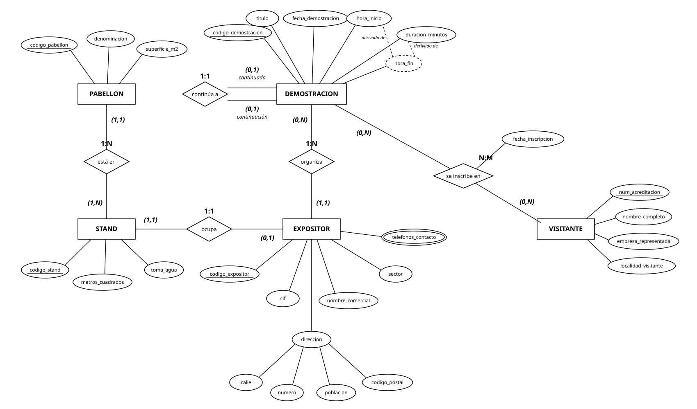
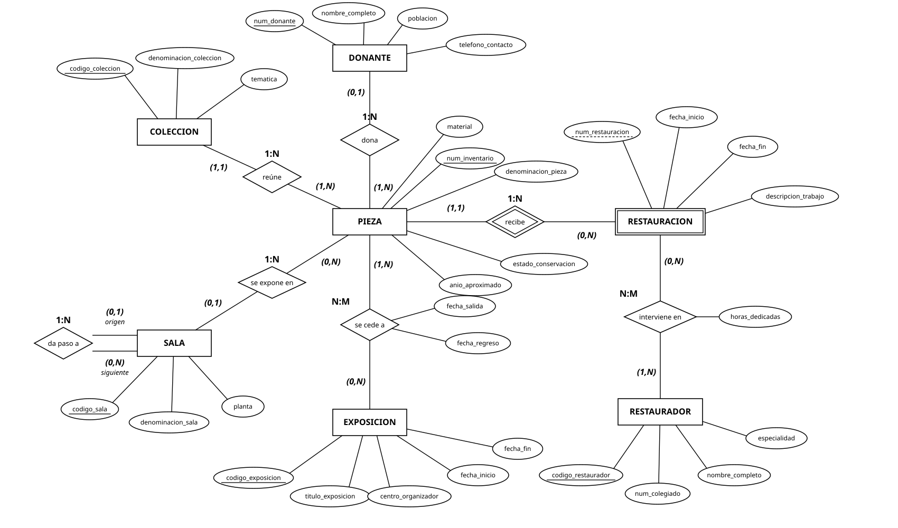
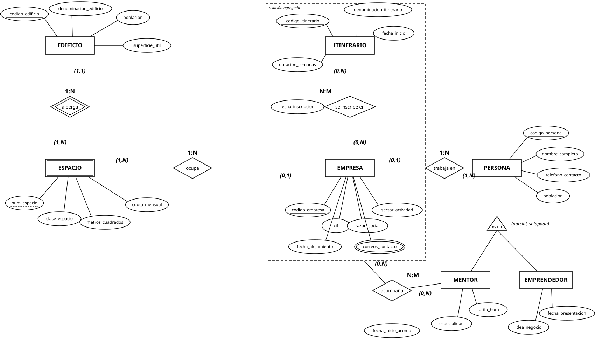
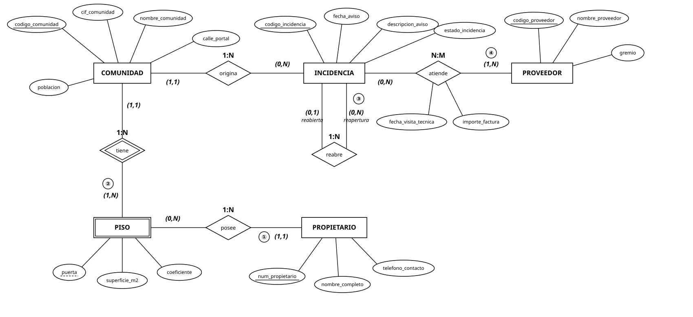
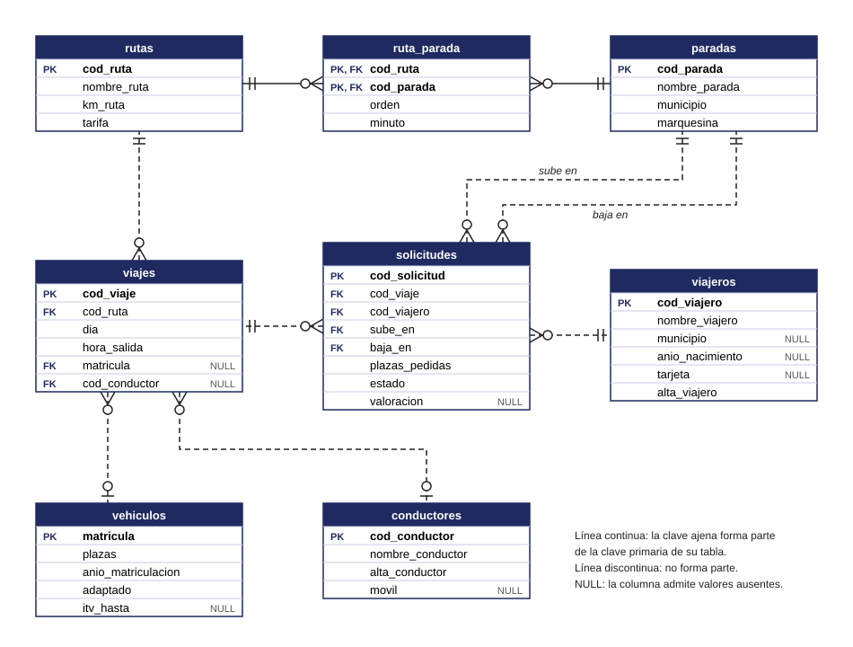

Cuaderno de prácticas · Bases de Datos¶
Módulo 0484 — Bases de Datos · 1.º DAW · IES Río Arba · Curso 2026-27
Este cuaderno reúne ejercicios extra de clase: prácticas más largas que los ejercicios de cada apartado de los apuntes, pensadas para trabajarlas en el aula con el enunciado delante y la herramienta abierta. No son evaluables: no se entregan por ningún canal ni cuentan para la nota. Sirven para lo que sirven los apuntes cuando dicen «ejecuta, rompe y arregla»: para que el método te salga solo cuando llegue la actividad evaluativa y el examen.
Cómo funciona:
- Cada práctica lleva el código CPu.n: cuaderno de prácticas, unidad u, número n. CP2.1 es la primera práctica de la UD2.
- Se trabaja en clase, de forma individual o en pareja, según se indique ese día. Lo que no te dé tiempo a terminar en el aula lo acabas en casa y lo traes a la sesión de corrección.
- La solución no está aquí. Se corrige en clase y, después de corregirla, el docente la publica en el Classroom del módulo, con los ficheros de la herramienta para que los abras y los compares con los tuyos.
- Las prácticas de diagramas se hacen con draw.io, como las entregas de la unidad: la guía rápida de draw.io explica los gestos, la biblioteca de formas y el nombrado de los ficheros. Los diagramas en Chen siguen la convención completa de la UD2 (ver apartado 3.4 de la UD2): la pareja (mín, máx) escrita junto a una entidad dice cuántas ocurrencias de esa entidad se asocian con cada ocurrencia de la otra, y sobre cada rombo va la etiqueta de su tipo (1:1, 1:N o N:M).
- Las prácticas de SQL, desde la UD4, se hacen con MySQL Workbench sobre una base de datos que cargas tú con un guion: la guía de instalación explica cómo instalarlo, cómo ejecutar un guion y dónde mirar los resultados y los errores.
El cuaderno crece durante el curso: solo aparecen las unidades que tienen prácticas extra, y cada unidad va ganando prácticas a medida que se trabajan en clase.
UD2 · Modelo entidad-relación¶
CP2.1 · Del enunciado al diagrama: la autoescuela comarcal¶
Qué refuerza. Los apartados 1 a 3 de la UD2: entidades y tipos de atributo (apartado 2.2), claves candidata y primaria con sus tres criterios (apartado 2.3), relaciones binarias y reflexivas con roles, atributos de relación (apartado 3.1), cardinalidades máxima y mínima con el método de fijar y preguntar (apartados 3.2 y 3.3) y la convención de parejas y etiqueta de tipo (apartado 3.4). No hace falta nada del apartado 4 en adelante: en este enunciado no hay entidades débiles, ni jerarquías, ni agregaciones, ni relaciones ternarias. Si en algún punto te parece que necesitas una, vuelve a leer la frase: tiene solución con lo visto hasta el apartado 3.
Enunciado.
- Una autoescuela de la comarca, con sedes en Tauste y Ejea de los Caballeros, quiere una base de datos para gestionar su actividad.
- De cada sede se guardan su código, la localidad y un teléfono.
- De cada alumno se guardan su número de expediente, su DNI, su nombre, su dirección (calle, número, localidad y código postal), uno o varios teléfonos de contacto, su fecha de nacimiento y su edad, que se calcula a partir de ella; cada alumno se matricula en una sola sede, y una sede recién abierta puede no tener todavía alumnos.
- Cada sede cuenta con su plantilla de profesores —todo profesor está en plantilla—, de los que se guardan su número de empleado, su nombre y su fecha de alta.
- Cada profesor tiene asignado un vehículo fijo, del que se guardan la matrícula, la marca, el modelo y la fecha de la última ITV; ningún vehículo está asignado a más de un profesor, y la autoescuela mantiene vehículos de reserva sin profesor asignado.
- Cada profesor tiene designado como mucho un sustituto para sus ausencias, que es otro profesor de la autoescuela; un mismo profesor puede ser el sustituto de varios compañeros o de ninguno, y los recién contratados aún no tienen sustituto.
- Las clases prácticas se registran con un código, la fecha, la hora de inicio y la duración; cada clase la recibe un único alumno y la imparte un único profesor, y un alumno recién matriculado, o un profesor recién contratado, todavía no tiene clases.
- Normalmente cada clase se da con el vehículo fijo del profesor, pero si ese vehículo está en el taller se usa uno de reserva, así que de cada clase hay que saber con qué vehículo se dio; un vehículo de reserva puede pasar meses sin usarse en ninguna clase.
- Los exámenes los convoca la administración de tráfico: de cada convocatoria la autoescuela guarda un código, la fecha, el tipo (teórico o práctico) y el lugar, y solo registra una convocatoria cuando inscribe en ella al menos a un alumno.
- Un alumno puede presentarse a varias convocatorias, a cada convocatoria se presentan varios alumnos, y hay alumnos que aún no se han presentado a ninguna; de cada presentación se guarda el resultado (apto o no apto).
Tareas.
- (a) Entidades y atributos. Lista las entidades del enunciado y, para cada una, sus atributos con su tipo (simple o compuesto; monovalorado o multivalorado; derivado o no). Elige la clave primaria de cada entidad. En la entidad que tiene dos claves candidatas, justifica la elección con los tres criterios del apartado 2.3 (siempre conocido, estable, mínimo) y di por qué descartas la otra.
- (b) Relaciones y cardinalidades. Para cada relación, escribe las dos frases de fijar y preguntar («dado UN …, ¿cuántos …?»), la pareja (mín, máx) que va junto a cada entidad y la etiqueta de tipo (1:1, 1:N o N:M). Junto a cada pareja, cita el número de la frase del enunciado que la justifica («frase 5») y cópiala. Si una relación es reflexiva, escribe sus dos roles; si tiene atributos propios, dilos y explica por qué no son de ninguna de las dos entidades.
- (c) Diagrama en Chen. Dibuja el modelo completo en notación de Chen con draw.io, con las formas de la biblioteca Entity Relation: rectángulo para la entidad, elipse para el atributo (doble para el multivalorado, discontinua para el derivado, con las partes colgando para el compuesto, nombre subrayado para la clave primaria) y rombo para la relación. Las parejas (mín, máx) van como etiquetas de las líneas, junto a su entidad; la etiqueta de tipo, sobre el rombo; los roles de la reflexiva, en sus líneas; el atributo de relación, colgando del rombo.
- (d) El mismo modelo en pata de gallo. Dibújalo también en pata de gallo con draw.io: una tabla por entidad con sus atributos y la clave primaria marcada como PK, líneas con los terminadores de pata de gallo en los dos extremos, y las anotaciones textuales de todo lo que la pata de gallo no dibuja, como mandan las notas de entrega de los apartados 2.2 y 3.4 de la UD2: «compuesto: …», «multivalorado», «derivado: no se almacena», los roles de la reflexiva como etiquetas de línea y el atributo de relación anotado en su línea.
- (e) La pregunta al cliente. Hay una cardinalidad que el enunciado no fija. Localízala, escribe la pregunta exacta que le harías a la autoescuela para resolverla y explica cómo cambia el diagrama según cuál sea la respuesta (qué pareja cambia y qué etiqueta de tipo cambia con ella). Mientras no tengas respuesta, dibuja la opción más sencilla y déjala señalada con una anotación.
Cómo trabajar. Lee el enunciado dos veces antes de dibujar: la primera para subrayar los sustantivos (candidatos a entidad o a atributo) y la segunda para subrayar los verbos (candidatos a relación) y las frases que hablan de cantidades («un único», «varios», «como mucho», «puede no tener», «al menos»). Cada pareja (mín, máx) que escribas tiene que apoyarse en una frase del enunciado; si no la encuentras, o la frase no existe —y entonces es la de la tarea (e)— o te la estás inventando. Nombra los ficheros como dice la guía de draw.io, con tu alias: ud2-cp2-1-chen-<alias>.drawio y ud2-cp2-1-pata-de-gallo-<alias>.drawio. Aunque las prácticas no se entregan, nómbralas así: es el mismo formato de las entregas evaluables y conviene tenerlo automatizado.
CP2.2 · Del enunciado al diagrama: la emisora comarcal¶
Qué refuerza. Todo lo que ya trabajó el CP2.1 —entidades y tipos de atributo (apartado 2.2), claves candidata y primaria con sus tres criterios (apartado 2.3), relaciones binarias y reflexivas con roles, atributos de relación (apartado 3.1), cardinalidades máxima y mínima con el método de fijar y preguntar (apartados 3.2 y 3.3) y la convención de parejas y etiqueta de tipo (apartado 3.4)— y, además, el apartado 4: entidades débiles, la relación identificativa, el discriminante y la diferencia entre depender de otra entidad en existencia y depender también en identificación. En este enunciado hay una entidad débil y no hay jerarquías, agregaciones ni relaciones ternarias: nada del apartado 5 en adelante.
Enunciado.
- Una emisora de radio comarcal con sede en Ejea de los Caballeros quiere una base de datos para gestionar su programación, su publicidad y sus concursos.
- De cada locutor se guardan su número de empleado, su DNI, su nombre, uno o varios teléfonos de contacto, su fecha de alta y su antigüedad en la emisora, que se calcula a partir de la fecha de alta.
- De cada programa se guardan un código, su nombre, el día de la semana y la hora de inicio en que se emite y su duración prevista; cada programa tiene un único locutor titular, y los locutores en prácticas aún no presentan ninguno.
- Algunos programas derivan de otro programa de la emisora (un especial de verano que sale de un magacín, una sección que se independiza): cada programa deriva como mucho de otro, los programas originales no derivan de ninguno, y un programa puede dar lugar a varios programas derivados o a ninguno.
- Cada vez que un programa sale al aire se registra una emisión, con su duración real y la cifra estimada de oyentes; cada emisión es de un único programa y un programa no se emite dos veces el mismo día, así que dentro de cada programa una emisión se identifica por su fecha; un programa recién estrenado aún no tiene ninguna emisión.
- La emisora tiene varios estudios, de los que se guardan un código, un nombre y el aforo; cada emisión sale de un único estudio, y el estudio pequeño se reserva para grabar publicidad y puede no tener emisiones.
- Cada programa tiene como mucho un perfil en redes sociales, del que se guardan un código, la plataforma, el nombre de usuario y el número de seguidores; cada perfil es de un único programa.
- De cada patrocinador se guardan un código, su nombre comercial, su dirección (calle, número, localidad y código postal) y un teléfono.
- Un patrocinador puede patrocinar varios programas y un programa puede tener varios patrocinadores, pero solo se da de alta a un patrocinador cuando patrocina al menos un programa, y hay programas sin patrocinio; de cada patrocinio se guarda el importe de la temporada.
- Algunos programas organizan concursos para la audiencia: de cada concurso se guardan un código, su nombre, la fecha del sorteo y una descripción del premio; cada concurso lo organiza un único programa, y la mayoría de los programas no organiza ninguno.
- El premio de cada concurso lo aporta siempre algún patrocinador; un mismo patrocinador puede aportar el premio de varios concursos o no haber aportado nunca ninguno.
Tareas.
- (a) Entidades y atributos. Lista las entidades del enunciado y, para cada una, sus atributos con su tipo (simple o compuesto; monovalorado o multivalorado; derivado o no). Elige la clave primaria de cada entidad. En la entidad que tiene dos claves candidatas, justifica la elección con los tres criterios del apartado 2.3 (siempre conocido, estable, mínimo) y di por qué descartas la otra.
- (b) Relaciones y cardinalidades. Para cada relación, escribe las dos frases de fijar y preguntar («dado UN …, ¿cuántos …?»), la pareja (mín, máx) que va junto a cada entidad y la etiqueta de tipo (1:1, 1:N o N:M). Junto a cada pareja, cita el número de la frase del enunciado que la justifica («frase 5») y cópiala. Si una relación es reflexiva, escribe sus dos roles; si tiene atributos propios, dilos y explica por qué no son de ninguna de las dos entidades.
- (c) Diagrama en Chen. Dibuja el modelo completo en notación de Chen con draw.io, con las formas de la biblioteca Entity Relation: rectángulo para la entidad, elipse para el atributo (doble para el multivalorado, discontinua para el derivado, con las partes colgando para el compuesto, nombre subrayado para la clave primaria) y rombo para la relación. Las parejas (mín, máx) van como etiquetas de las líneas, junto a su entidad; la etiqueta de tipo, sobre el rombo; los roles de la reflexiva, en sus líneas; el atributo de relación, colgando del rombo. Lo nuevo del apartado 4: la entidad débil va en rectángulo doble, su relación identificativa en rombo doble y su discriminante con el subrayado discontinuo (figura 3 de la UD2).
- (d) El mismo modelo en pata de gallo. Dibújalo también en pata de gallo con draw.io: una tabla por entidad con sus atributos y la clave primaria marcada como PK, líneas con los terminadores de pata de gallo en los dos extremos, y las anotaciones textuales de todo lo que la pata de gallo no dibuja, como mandan las notas de entrega de los apartados 2.2, 3.4 y 4 de la UD2: «compuesto: …», «multivalorado», «derivado de …: no se almacena», los roles de la reflexiva como etiquetas de línea y el atributo de relación anotado en su línea. Lo nuevo del apartado 4: la relación identificativa va con línea continua y todas las demás con línea discontinua (figuras 3 y 4 de la UD2, gesto 6 de la guía de draw.io), y el discriminante se marca como PK parcial o con una anotación que diga cuál es la clave completa de la entidad débil.
- (e) La pregunta al cliente. Hay una cardinalidad que el enunciado no fija. Localízala, escribe la pregunta exacta que le harías a la emisora para resolverla y explica cómo cambia el diagrama según cuál sea la respuesta (qué pareja cambia y qué etiqueta de tipo cambia con ella). Mientras no tengas respuesta, dibuja la opción más sencilla y déjala señalada con una anotación.
- (f) La entidad débil. Di qué entidad del enunciado es débil, cuál es su entidad fuerte, cuál es su relación identificativa y cuál su discriminante, y escribe cómo se nombra sin ambigüedad una ocurrencia concreta (su clave completa). Explica con sus frases del enunciado por qué depende de la fuerte en existencia y en identificación. Después busca en el mismo enunciado una entidad que también exige a otra con (1,1) y que sin embargo no es débil, y explica por qué no lleva trazos dobles aunque no pueda existir sin la otra (figura 4 de la UD2).
Cómo trabajar. Lee el enunciado dos veces antes de dibujar: la primera para subrayar los sustantivos (candidatos a entidad o a atributo) y la segunda para subrayar los verbos (candidatos a relación) y las frases que hablan de cantidades («un único», «varios», «como mucho», «puede no tener», «al menos»). Cada pareja (mín, máx) que escribas tiene que apoyarse en una frase del enunciado; si no la encuentras, o la frase no existe —y entonces es la de la tarea (e)— o te la estás inventando. Para la tarea (f), la pregunta que decide no es «¿puede existir sin la otra?» sino «¿cómo la nombro sin ambigüedad?» (apartado 4, «Cómo se examina esto»). Nombra los ficheros como dice la guía de draw.io, con tu alias: ud2-cp2-2-chen-<alias>.drawio y ud2-cp2-2-pata-de-gallo-<alias>.drawio.
CP2.3 · Del enunciado al diagrama: la muestra de teatro aficionado¶
Qué refuerza. Todo lo del CP2.1 y el CP2.2 —entidades y tipos de atributo (apartado 2.2), claves con sus tres criterios (apartado 2.3), relaciones binarias y reflexivas con roles, atributos de relación (apartado 3.1), cardinalidades con el método de fijar y preguntar (apartados 3.2 y 3.3), la convención de parejas y etiqueta de tipo (apartado 3.4) y la entidad débil con su discriminante (apartado 4)— y, además, el apartado 5: la jerarquía supertipo-subtipos, qué atributos y relaciones van en el supertipo y cuáles en cada subtipo, y las dos decisiones que toda jerarquía lleva anotadas, totalidad y solapamiento, cada una con la frase del enunciado que la decide. En este enunciado hay una entidad débil y una jerarquía; no hay agregaciones ni relaciones ternarias: nada del apartado 6 en adelante.
Enunciado.
- La muestra de teatro aficionado de las Cinco Villas, itinerante por las salas de la comarca, quiere una base de datos para gestionar las compañías, las obras y las funciones de cada edición.
- De cada compañía se guardan su código de inscripción, su CIF, su nombre, su dirección (calle, número, localidad y código postal), uno o varios teléfonos de contacto, su fecha de fundación y su antigüedad, que se calcula a partir de la fecha de fundación.
- De cada obra se guardan un código, su título, su autor, su género y su duración; cada obra la presenta una sola compañía, y toda compañía inscrita presenta al menos una obra.
- Algunas obras son versión de otra obra presentada en ediciones anteriores de la muestra (una adaptación, un montaje nuevo del mismo texto): cada obra es versión de como mucho una obra anterior, las obras originales no son versión de ninguna, y una obra puede tener varias versiones posteriores o ninguna.
- De cada personaje de una obra se guardan su nombre y una breve descripción; cada personaje pertenece a una obra, toda obra tiene al menos un personaje, y dentro de una obra no hay dos personajes con el mismo nombre, aunque dos obras distintas pueden tener un personaje llamado igual.
- De cada miembro de una compañía se guardan su número de ficha, su nombre y un teléfono; cada miembro pertenece a una sola compañía, y una compañía se inscribe con al menos un miembro.
- Todo miembro inscrito actúa, dirige o las dos cosas, y es habitual que quien dirige también actúe; de los actores se guarda además la fecha de su debut, y de los directores, su formación.
- Cada personaje lo encarna siempre algún actor de la compañía; un actor puede encarnar varios personajes, y los actores de reserva no encarnan ninguno.
- Cada obra tiene un único director, y quien figura como director dirige al menos una obra de su compañía.
- Las funciones se registran con un código, la fecha, la hora y el número de entradas vendidas; cada función es de una obra, y hay obras inscritas sin función programada todavía.
- De cada sala se guardan un código, su nombre, su localidad y su aforo; cada función se celebra en una sala, y alguna sala no acoge funciones esta edición.
- De cada miembro del jurado se guardan un código, su nombre y su procedencia; toda obra recibe la puntuación de al menos un miembro del jurado y normalmente de varios, un miembro del jurado puntúa varias obras y puede no haber puntuado aún ninguna, y de cada puntuación se guarda la nota dada.
Tareas.
- (a) Entidades y atributos. Lista las entidades del enunciado y, para cada una, sus atributos con su tipo (simple o compuesto; monovalorado o multivalorado; derivado o no). Elige la clave primaria de cada entidad. En la entidad que tiene dos claves candidatas, justifica la elección con los tres criterios del apartado 2.3 (siempre conocido, estable, mínimo) y di por qué descartas la otra.
- (b) Relaciones y cardinalidades. Para cada relación, escribe las dos frases de fijar y preguntar («dado UN …, ¿cuántos …?»), la pareja (mín, máx) que va junto a cada entidad y la etiqueta de tipo (1:1, 1:N o N:M). Junto a cada pareja, cita el número de la frase del enunciado que la justifica («frase 5») y cópiala. Si una relación es reflexiva, escribe sus dos roles; si tiene atributos propios, dilos y explica por qué no son de ninguna de las dos entidades.
- (c) Diagrama en Chen. Dibuja el modelo completo en notación de Chen con draw.io, con las formas de la biblioteca Entity Relation: rectángulo para la entidad, elipse para el atributo (doble para el multivalorado, discontinua para el derivado, con las partes colgando para el compuesto, nombre subrayado para la clave primaria) y rombo para la relación; las parejas (mín, máx) como etiquetas de las líneas, junto a su entidad; la etiqueta de tipo sobre el rombo; los roles de la reflexiva en sus líneas; el atributo de relación colgando del rombo; la entidad débil en rectángulo doble, su relación identificativa en rombo doble y su discriminante con el subrayado discontinuo. Lo nuevo del apartado 5: la jerarquía con el triángulo «es un» del supertipo hacia los subtipos y, junto al triángulo, la anotación de sus dos decisiones, «(total o parcial, exclusiva o solapada)», como en la figura 5 de la UD2.
- (d) El mismo modelo en pata de gallo. Dibújalo también en pata de gallo con draw.io: una tabla por entidad con sus atributos y la clave primaria marcada como PK, líneas con los terminadores de pata de gallo en los dos extremos, la relación identificativa con línea continua y las demás con línea discontinua, y las anotaciones textuales de todo lo que la pata de gallo no dibuja, como mandan las notas de entrega de los apartados 2.2, 3.4, 4 y 5 de la UD2: «compuesto: …», «multivalorado», «derivado de …: no se almacena», los roles de la reflexiva como etiquetas de línea, el atributo de relación anotado en su línea y el discriminante marcado como PK parcial o con la clave completa anotada. Lo nuevo del apartado 5: la pata de gallo no tiene jerarquías; dibuja el triángulo con formas básicas de draw.io, una tabla por subtipo con solo sus atributos propios, y anota junto al triángulo las dos decisiones.
- (e) La pregunta al cliente. Hay una cardinalidad que el enunciado no fija. Localízala, escribe la pregunta exacta que le harías a la organización de la muestra para resolverla y explica cómo cambia el diagrama según cuál sea la respuesta (qué pareja cambia y qué etiqueta de tipo cambia con ella). Mientras no tengas respuesta, dibuja la opción más sencilla y déjala señalada con una anotación.
- (f) La entidad débil. Di qué entidad del enunciado es débil, cuál es su entidad fuerte, cuál es su relación identificativa y cuál su discriminante, y escribe cómo se nombra sin ambigüedad una ocurrencia concreta (su clave completa). Explica con sus frases del enunciado por qué depende de la fuerte en existencia y en identificación. Después busca en el mismo enunciado una entidad que también exige a otra con (1,1) y que sin embargo no es débil, y explica por qué no lleva trazos dobles aunque no pueda existir sin la otra (figura 4 de la UD2).
- (g) La jerarquía. Di cuál es el supertipo y cuáles los subtipos, y qué frase del enunciado justifica que haya jerarquía y no un simple atributo «tipo» (apartado 5, «cuándo no especializar»). Decide totalidad y solapamiento copiando la frase del enunciado que decide cada una. Después reparte: qué atributos y qué relaciones van en el supertipo y cuáles en cada subtipo, aplicando el criterio del E17 («cada cosa en el nivel más alto donde es común a todos»).
Cómo trabajar. Lee el enunciado dos veces antes de dibujar: la primera para subrayar los sustantivos (candidatos a entidad o a atributo) y la segunda para subrayar los verbos (candidatos a relación) y las frases que hablan de cantidades («un único», «varios», «como mucho», «puede no tener», «al menos»). Cada pareja (mín, máx) que escribas tiene que apoyarse en una frase del enunciado; si no la encuentras, o la frase no existe —y entonces es la de la tarea (e)— o te la estás inventando. Para la tarea (g), las dos preguntas de la tabla del apartado 5 son las que decides: «¿existe alguien del supertipo que no sea de ningún subtipo?» y «¿puede alguien ser de dos subtipos a la vez?»; las respuestas están en el enunciado, no en lo que te parezca razonable. Nombra los ficheros como dice la guía de draw.io, con tu alias: ud2-cp2-3-chen-<alias>.drawio y ud2-cp2-3-pata-de-gallo-<alias>.drawio.
CP2.4 · Del enunciado al diagrama: el coto micológico comarcal¶
Qué refuerza. Todo lo del CP2.1, el CP2.2 y el CP2.3 —entidades y tipos de atributo (apartado 2.2), claves con sus tres criterios (apartado 2.3), relaciones binarias y reflexivas con roles, atributos de relación (apartado 3.1), cardinalidades con el método de fijar y preguntar (apartados 3.2 y 3.3), la convención de parejas y etiqueta de tipo (apartado 3.4), la entidad débil con su discriminante (apartado 4) y la jerarquía con sus dos decisiones (apartado 5)— y, además, el apartado 6: la agregación, cuándo una relación se trata como entidad de orden superior para relacionarla con otra entidad, y por qué en ese caso no sirve una relación ternaria. En este enunciado hay una entidad débil, una jerarquía y una agregación.
Enunciado.
- El coto micológico comarcal, que agrupa montes de varios municipios de las Cinco Villas y las Bardenas, quiere una base de datos para gestionar sus recolectores, sus permisos, sus zonas y sus especies.
- De cada recolector se guardan su número de recolector, su DNI, su nombre, su dirección (calle, número, localidad y código postal), uno o varios teléfonos de contacto, su fecha de nacimiento y su edad, que se calcula a partir de ella.
- Algunos recolectores son locales, empadronados en un municipio del coto, y de ellos se guarda además el municipio de empadronamiento; otros son vinculados, con segunda residencia en la comarca, y de ellos se guarda además la localidad de vinculación; los demás son foráneos y no se guarda nada más de ellos. Quien está empadronado en el coto cuenta como local aunque tenga además segunda residencia: nadie es local y vinculado a la vez.
- De cada permiso se guardan su número, único en todo el coto, la temporada, la modalidad y el importe; cada permiso es de un recolector, y un recolector se registra al sacar su primer permiso y saca uno nuevo cada temporada.
- De cada zona del coto se guardan un código, su nombre, su municipio y su superficie.
- Cada permiso habilita siempre para recolectar en alguna zona del coto; una zona recién abierta puede no tener permisos expedidos todavía.
- Cada recolector declara sus salidas al monte: de cada salida se guardan la fecha, la hora de entrada y la hora de salida; cada salida es de un recolector, un recolector declara como mucho una salida por día, aunque distintos recolectores salen el mismo día, y un recolector con permiso puede no haber salido aún.
- Cada salida se declara para una única zona, y una zona cerrada por regeneración no tiene salidas.
- De cada especie catalogada se guardan un código, su nombre común, su familia y si es comestible; toda especie catalogada se da en al menos una zona, y normalmente en varias; una zona recién incorporada puede no tener aún especies catalogadas, y de cada especie en cada zona se guarda su mes de mayor abundancia.
- De cada guarda se guardan su número, su nombre y un teléfono; cada zona tiene un guarda titular, un guarda es titular de como mucho una zona, y los guardas de refuerzo no son titulares de ninguna.
- Se registra qué guardas relevan a los que dejan el coto: cada guarda ha relevado como mucho a un guarda anterior, los primeros guardas del coto no relevaron a nadie, y un guarda que se marcha puede haber sido relevado por varios guardas, si su zona se repartió, o por ninguno.
- Las especies se muestrean zona por zona: de cada muestreo se guardan un código, la fecha y la densidad observada; cada muestreo es de una especie en una zona de las que tiene catalogadas, y una misma pareja especie-zona puede tener varios muestreos a lo largo de la temporada o ninguno.
Tareas.
- (a) Entidades y atributos. Lista las entidades del enunciado y, para cada una, sus atributos con su tipo (simple o compuesto; monovalorado o multivalorado; derivado o no). Elige la clave primaria de cada entidad. En la entidad que tiene dos claves candidatas, justifica la elección con los tres criterios del apartado 2.3 (siempre conocido, estable, mínimo) y di por qué descartas la otra.
- (b) Relaciones y cardinalidades. Para cada relación, escribe las dos frases de fijar y preguntar («dado UN …, ¿cuántos …?»), la pareja (mín, máx) que va junto a cada entidad y la etiqueta de tipo (1:1, 1:N o N:M). Junto a cada pareja, cita el número de la frase del enunciado que la justifica («frase 5») y cópiala. Si una relación es reflexiva, escribe sus dos roles; si tiene atributos propios, dilos y explica por qué no son de ninguna de las dos entidades.
- (c) Diagrama en Chen. Dibuja el modelo completo en notación de Chen con draw.io, con las formas de la biblioteca Entity Relation: rectángulo para la entidad, elipse para el atributo (doble para el multivalorado, discontinua para el derivado, con las partes colgando para el compuesto, nombre subrayado para la clave primaria) y rombo para la relación; las parejas (mín, máx) como etiquetas de las líneas, junto a su entidad; la etiqueta de tipo sobre el rombo; los roles de la reflexiva en sus líneas; el atributo de relación colgando del rombo; la entidad débil en rectángulo doble, su relación identificativa en rombo doble y su discriminante con el subrayado discontinuo; la jerarquía con el triángulo «es un» y la anotación de sus dos decisiones. Lo nuevo del apartado 6: la agregación como un recuadro que engloba la relación agregada con sus dos entidades, y desde ese recuadro la línea hacia la entidad que se relaciona con la pareja, con su pareja (mín, máx) en cada extremo y su etiqueta de tipo, como en la figura 6 de la UD2.
- (d) El mismo modelo en pata de gallo. Dibújalo también en pata de gallo con draw.io: una tabla por entidad con sus atributos y la clave primaria marcada como PK, líneas con los terminadores de pata de gallo en los dos extremos, la relación identificativa con línea continua y las demás con línea discontinua, el triángulo de la jerarquía con formas básicas y su anotación, y las anotaciones textuales de todo lo que la pata de gallo no dibuja, como mandan las notas de entrega de los apartados 2.2, 3.4, 4, 5 y 6 de la UD2. Lo nuevo del apartado 6: la agregación no existe en pata de gallo y no se fuerza; usa un contenedor de draw.io alrededor del fragmento agregado con la nota «relación agregada» (guía de draw.io, gesto 8) y saca de él la línea hacia la otra entidad.
- (e) La pregunta al cliente. Hay una cardinalidad que el enunciado no fija. Localízala, escribe la pregunta exacta que le harías al coto para resolverla y explica cómo cambia el diagrama según cuál sea la respuesta (qué pareja cambia y qué etiqueta de tipo cambia con ella). Mientras no tengas respuesta, dibuja la opción más sencilla y déjala señalada con una anotación.
- (f) La entidad débil. Di qué entidad del enunciado es débil, cuál es su entidad fuerte, cuál es su relación identificativa y cuál su discriminante, y escribe cómo se nombra sin ambigüedad una ocurrencia concreta (su clave completa). Explica con sus frases del enunciado por qué depende de la fuerte en existencia y en identificación. Después busca en el mismo enunciado una entidad que también exige a otra con (1,1) y que sin embargo no es débil, y explica por qué no lleva trazos dobles aunque no pueda existir sin la otra (figura 4 de la UD2).
- (g) La jerarquía. Di cuál es el supertipo y cuáles los subtipos, y qué frase del enunciado justifica que haya jerarquía y no un simple atributo «tipo». Decide totalidad y solapamiento copiando la frase del enunciado que decide cada una. Después reparte: qué atributos y qué relaciones van en el supertipo y cuáles en cada subtipo.
- (h) La agregación. Di qué relación se agrega y qué entidad se relaciona con la pareja agregada, con la pareja (mín, máx) en cada extremo y la etiqueta de tipo. Explica, con la frase del enunciado que lo decide, por qué el modelo correcto es la agregación y no una relación ternaria entre las tres entidades (apartado 6: ¿pueden existir las dos primeras asociadas sin la tercera?). Di también dónde vive cada atributo: el de la pareja agregada y los de la entidad que cuelga de ella.
Cómo trabajar. Lee el enunciado dos veces antes de dibujar: la primera para subrayar los sustantivos (candidatos a entidad o a atributo) y la segunda para subrayar los verbos (candidatos a relación) y las frases que hablan de cantidades («un único», «varios», «como mucho», «puede no tener», «al menos»). Cada pareja (mín, máx) que escribas tiene que apoyarse en una frase del enunciado; si no la encuentras, o la frase no existe —y entonces es la de la tarea (e)— o te la estás inventando. Para la tarea (f), el discriminante no viene nombrado: el enunciado da los datos y la conclusión la sacas tú. Para la tarea (h), aplica el paso 5 del método del apartado 7.1 («¿alguna relación sobre relación?») y la regla de higiene del apartado 6: la agregación se gana con una frase del enunciado, no se pone por elegancia. Nombra los ficheros como dice la guía de draw.io, con tu alias: ud2-cp2-4-chen-<alias>.drawio y ud2-cp2-4-pata-de-gallo-<alias>.drawio.
UD3 · Modelo relacional y normalización¶
Las prácticas de esta unidad cambian de materia prima: en la UD2 partías del enunciado y llegabas al diagrama; aquí partes del diagrama ya hecho y del enunciado, y llegas al esquema relacional: las tablas, sus campos, sus claves, las políticas de cada clave ajena y la lista de lo que las tablas no pueden vigilar. Los diagramas se dan en notación de Chen con la convención de la UD2 (apartado 3.4): la pareja (mín, máx) junto a una entidad dice cuántas ocurrencias de esa entidad se asocian con cada ocurrencia de la otra, y la etiqueta sobre el rombo es el tipo de la relación, que es lo que decide la traducción (apartado 4.2 de la UD3). El enunciado sigue numerado por frases porque las decisiones que la UD3 te pide —qué clave ajena admite NULL, qué pasa al borrar, qué regla no cabe en ninguna tabla— salen de frases, igual que salían las cardinalidades. Los esquemas se escriben en la notación de entrega de la UD3: clave primaria en negrita, cada clave ajena con su flecha a la tabla destino y, junto a cada flecha, la política de borrado. Las tablas que solo guardan una parte de otra fila —los valores de un multivalorado, la fila de un subtipo— se borran con su dueño, como en el ejemplo del apartado 4.4: esa política no necesita frase. El diagrama lógico se entrega en pata de gallo con draw.io, que es donde se evalúa definitivamente el criterio de herramienta (RA6.a).
CP3.1 · Del diagrama al esquema: la feria de muestras comarcal¶
Qué refuerza. Los apartados 1, 2, 4.1 y 4.2 de la UD3: la terminología del modelo relacional y las propiedades que separan una relación de una hoja de cálculo (apartado 1), la escalera de claves y la clave ajena con su decisión NULL/NOT NULL (apartado 2), y la traducción de entidades y atributos (apartado 4.1) y de relaciones por su etiqueta de tipo (apartado 4.2): 1:N, N:M con atributo, 1:1 y reflexiva. En este diagrama todas las entidades son fuertes: no hay débiles, ni jerarquías, ni agregaciones; nada del apartado 4.3 en adelante.
Enunciado.
- La feria de muestras comarcal de las Cinco Villas, que se celebra cada otoño en un recinto de Ejea de los Caballeros, quiere una base de datos para gestionar la edición de este año: sus expositores, los pabellones y los stands, las demostraciones y los visitantes profesionales.
- De cada expositor se guardan su código de inscripción, su CIF, su nombre comercial, su sector, su dirección (calle, número, población y código postal) y uno o varios teléfonos de contacto.
- De cada pabellón se guardan su código, su denominación y su superficie; de cada stand, su código, único en todo el recinto, sus metros cuadrados y si tiene toma de agua.
- Cada stand está en un único pabellón, y todo pabellón tiene al menos un stand.
- Cada expositor inscrito ocupa exactamente un stand; cada stand lo ocupa como mucho un expositor, y los stands que quedan sin adjudicar se reservan para la organización.
- Los expositores programan demostraciones de producto: de cada demostración se guardan su código, su título, su fecha, su hora de inicio, su duración en minutos y su hora de fin, que se calcula a partir de la hora de inicio y la duración; cada demostración la organiza un único expositor, y hay expositores que no programan ninguna.
- Algunas demostraciones se parten en dos sesiones: una demostración continúa como mucho a otra, y a una demostración la continúa como mucho otra; la mayoría no tiene continuación.
- De cada visitante profesional se guardan su número de acreditación, su nombre completo, la empresa a la que representa y su localidad.
- Los visitantes se inscriben en las demostraciones que les interesan: un visitante puede inscribirse en varias demostraciones o en ninguna, y en cada demostración se inscriben varios visitantes, aunque las recién programadas aún no tienen inscritos; de cada inscripción se guarda la fecha en que se hizo.
- Un pabellón solo se retira del plano del recinto cuando ya no le queda ningún stand, y un stand no se elimina mientras tenga un expositor adjudicado.
- Si una demostración se cancela, las inscripciones que tenía se anulan con ella, y la sesión que la continuaba, si la había, pasa a ser una demostración independiente.
- Un visitante que anula su acreditación pierde todas sus inscripciones.
- Cuando un expositor renuncia antes de la feria, la organización lo da de baja.
El diagrama. Es el resultado de aplicar el método de la UD2 al enunciado anterior; dalo por bueno y tradúcelo. Fíjate en que cada pareja se lee junto a la entidad en la que está escrita.

Tareas.
- (a) Terminología y propiedades. La organización ya tiene esta instancia de
stands, con cinco filas:(S-01, 24, sí, P-1),(S-02, 24, no, P-1),(S-03, 36, sí, P-1),(S-10, 48, no, P-2),(S-11, 48, sí, P-2). Escribe su esquema en la notación de la unidad, indica su grado y su cardinalidad, y di qué parte de lo anterior es esquema y qué parte es instancia. Después mira la hoja de cálculo con la que trabaja hoy la organización: una pestañaexpositorescon la columnatelefonos_contactorellena como «976 66 11 22 / 600 11 22 33», una fila repetida porque el expositor se inscribió dos veces, y las filas ordenadas «por importancia del expositor». Di qué propiedad del apartado 1.2 viola cada una de las tres cosas y qué hace con cada una el esquema relacional que vas a construir. - (b) Claves. EXPOSITOR tiene dos claves candidatas. Escribe para esa entidad dos superclaves que no sean candidatas, sus dos candidatas, elige la primaria aplicando los cuatro criterios del apartado 2.1 (conocida, estable, mínima, sin NULL) y di qué se hace con la candidata descartada. Después recorre las cinco relaciones y, para cada clave ajena que vaya a existir, decide si admite NULL o no citando la frase y la pareja (mín, máx) del diagrama que lo decide.
- (c) Traducción regla a regla. Aplica el algoritmo del apartado 4 escribiendo, para cada elemento, qué regla usas y por qué: las cinco entidades (4.1); el atributo compuesto, el multivalorado y el derivado (4.1); y las cinco relaciones por su etiqueta de tipo (4.2): en las 1:N, qué clave viaja y a qué tabla; en la N:M, qué tabla nace y qué clave primaria tiene; en la 1:1, en qué lado va la clave ajena y por qué (el criterio del apartado 4.2 es la participación más obligatoria); en la reflexiva, qué nombre de rol lleva la clave ajena y qué la hace única.
- (d) El esquema íntegro. Escríbelo completo en la notación de entrega de la UD3: clave primaria en negrita, cada clave ajena con su flecha, y junto a cada flecha la política de borrado (rechazar, propagar o poner a NULL) con la frase del enunciado que la decide.
- (e) La pregunta al cliente. Hay una política de borrado que el enunciado no fija. Localízala, escribe la pregunta exacta que le harías a la organización de la feria y explica qué cambia en el esquema según cuál sea la respuesta. Mientras no tengas respuesta, anota en el esquema la opción que menos información destruye y déjala señalada.
- (f) Diagrama lógico en pata de gallo. Dibuja el esquema de la tarea (d) con draw.io: una tabla por cada tabla del esquema (también las que nacen de la N:M y del multivalorado), con sus campos, la clave primaria marcada como PK, y cada clave ajena como una línea desde la tabla que la contiene hasta la tabla a la que apunta, con los terminadores de pata de gallo en los dos extremos; todas las líneas discontinuas (no hay relación identificativa), las notas que manda la tabla 7.2 de la UD2 para lo que la pata de gallo no dibuja (los roles de la reflexiva, el derivado que no se almacena) y, junto a cada línea, su política de borrado como etiqueta.
Cómo trabajar. Antes de escribir ninguna tabla, lee cada rombo con su etiqueta de tipo y di en voz alta la regla del apartado 4.2 que le toca; la etiqueta decide el mecanismo y las parejas deciden los NULL. Cada política de borrado tiene que apoyarse en una frase del enunciado; si no la encuentras, o la frase no existe —y entonces es la de la tarea (e)— o te la estás inventando. Para la tarea (a), el apartado 1.2 enumera cinco propiedades: cada cosa de la hoja viola una distinta. Nombra el fichero como dice la guía de draw.io, con tu alias: ud3-cp3-1-logico-<alias>.drawio, y guárdalo con su exportación para la sesión de corrección.
CP3.2 · Del diagrama al esquema: el museo etnográfico comarcal¶
Qué refuerza. Todo lo que ya trabajó el CP3.1 —terminología (apartado 1), claves y clave ajena con su decisión NULL/NOT NULL (apartado 2), traducción de entidades, compuestos, multivalorados y derivados (apartado 4.1) y de relaciones por su etiqueta de tipo (apartado 4.2)— y, además, el apartado 3: las tres reglas de integridad y las políticas de borrado y modificación de cada clave ajena, y la primera pieza del apartado 4.3: la entidad débil, con su clave primaria compuesta y el doble papel de la clave del padre. En este diagrama hay una entidad débil y no hay jerarquías ni agregaciones.
Enunciado.
- El museo etnográfico comarcal, con sede en Sádaba, quiere una base de datos para gestionar sus colecciones, sus piezas, sus salas, las restauraciones y las cesiones de piezas a exposiciones de otros centros.
- De cada colección se guardan su código, su denominación y su temática; de cada sala, su código, su denominación y la planta en la que está.
- De cada pieza se guardan su número de inventario, su denominación, el material, el año aproximado de fabricación y su estado de conservación; cada pieza pertenece a una única colección, y toda colección tiene al menos una pieza.
- Una pieza está expuesta como mucho en una sala, y muchas están en el almacén, sin sala; en una sala puede haber varias piezas o ninguna, cuando está cerrada por obras.
- De cada donante se guardan su número de donante, su nombre completo, su población y un teléfono de contacto; una pieza procede como mucho de un donante, y las compradas no proceden de ninguno; todo donante registrado ha entregado al menos una pieza.
- Las piezas se restauran: de cada restauración se guardan la fecha de inicio, la fecha de fin, si ya ha terminado, y una descripción del trabajo; cada restauración es de una única pieza, y las restauraciones de una misma pieza se numeran por orden desde la primera, de modo que dentro de una pieza no hay dos con el mismo número, aunque dos piezas distintas tienen cada una su restauración número 1; la mayoría de las piezas no se ha restaurado nunca.
- De cada restaurador se guardan su código, su número de colegiado, si lo tiene, su nombre completo y su especialidad.
- En cada restauración interviene al menos un restaurador, a veces varios, y de cada uno se guardan las horas que le dedicó; un restaurador puede haber intervenido en varias restauraciones o en ninguna todavía.
- Las salas forman un recorrido: desde cada sala se puede pasar a varias salas o a ninguna, si es final de recorrido, y a cada sala se llega desde como mucho una sala.
- De cada exposición de otro centro a la que el museo cede piezas se guardan su código, su título, el centro que la organiza y sus fechas de inicio y de fin; una pieza puede cederse a varias exposiciones a lo largo de los años o a ninguna, y toda exposición registrada ha recibido al menos una pieza; de cada cesión se guardan la fecha de salida y la fecha de regreso, si la pieza ya ha vuelto.
- Una colección no se elimina mientras tenga piezas; si una pieza se da de baja del inventario, su historial de restauraciones se elimina con ella, horas de los restauradores incluidas; una pieza que ha sido cedida alguna vez no puede darse de baja, y una exposición ya registrada no se elimina.
- Si un donante pide que se retire su nombre del registro, las piezas que entregó se conservan sin donante; si un restaurador deja de colaborar con el museo, las horas que dedicó a cada restauración se conservan.
- Cuando una sala se clausura, se elimina del recorrido.
El diagrama. Dalo por bueno y tradúcelo. RESTAURACION es la entidad débil: rectángulo doble, rombo doble en recibe y discriminante con el subrayado discontinuo.

Tareas.
- (a) El mapa de tablas. Antes de escribir ningún campo, enumera todas las tablas que produce la traducción, indicando para cada una de qué elemento del diagrama procede (entidad fuerte, entidad débil, relación N:M) y, en las que proceden de una relación, cuál es su clave primaria. Cuenta cuántas son.
- (b) El esquema íntegro. Escríbelo completo en la notación de entrega: clave primaria en negrita, clave ajena con flecha. Cuida los tres puntos finos del apartado 4.3: la clave primaria compuesta de la entidad débil, el doble papel de la clave del padre (parte de la clave propia y clave ajena a la vez) y la clave ajena compuesta que la tabla de la N:M interviene en debe llevar hacia la débil. Decide NULL o NOT NULL en cada clave ajena citando la pareja y la frase que lo deciden, y elige la primaria de RESTAURADOR con los cuatro criterios del apartado 2.1.
- (c) Las tres reglas de integridad. Pon un ejemplo concreto de violación de cada una de las tres reglas del apartado 3 sobre tu esquema, con los valores exactos que la provocarían: una fila que viola la integridad de entidad, una que viola la referencial y una que viola la de dominio.
- (d) Las políticas de borrado. Haz la tabla de todas las claves ajenas del esquema con su política de borrado (rechazar, propagar o poner a NULL) y la frase del enunciado que la decide en una línea. Señala razonadamente el caso más discutible: aquel en que la frase admite dos lecturas o en que la política elegida tiene un coste que el cliente debería conocer. Di también qué pasa con la política de modificación y por qué el apartado 3 la considera una palanca de emergencia.
- (e) La pregunta al cliente. Hay una política de borrado que el enunciado no fija, y afecta a más de una clave ajena. Localízala, escribe la pregunta exacta que le harías al museo y explica qué cambia en el esquema según cuál sea la respuesta. Mientras no tengas respuesta, anota la opción que menos información destruye y déjala señalada.
- (f) Diagrama lógico en pata de gallo. Dibuja el esquema de la tarea (b) con draw.io, como en el CP3.1, y marca lo nuevo: la línea de la clave ajena que forma parte de una clave primaria va continua (la de la débil hacia su padre y las de las tablas que nacen de una N:M), las demás, discontinuas; en la tabla de la débil, las dos columnas de la clave compuesta marcadas como PK y la del padre, además, como FK; la clave ajena compuesta dibujada como una sola línea con sus dos columnas en la etiqueta.
Cómo trabajar. El orden importa: primero el mapa de tablas (tarea (a)), después los campos; quien escribe campos sin mapa olvida las tablas «invisibles», las que nacen de una N:M. Para la débil, la pregunta de la UD2 sigue valiendo aquí: «¿cómo nombro sin ambigüedad una restauración concreta?» → con la pieza y el número; eso es su clave primaria. Cada política tiene que apoyarse en una frase; si no la encuentras, o la frase no existe —y entonces es la de la tarea (e)— o te la estás inventando. Nombra el fichero con tu alias: ud3-cp3-2-logico-<alias>.drawio, y guárdalo con su exportación para la sesión de corrección.
CP3.3 · Del diagrama al esquema: el vivero comarcal de empresas¶
Qué refuerza. Todo lo del CP3.1 y el CP3.2 —terminología, claves y NULL, integridad y políticas, traducción de entidades, atributos y relaciones por su etiqueta de tipo, y la entidad débil— y, además, el resto del apartado 4.3: la jerarquía con sus tres estrategias de traducción y la agregación, y el apartado 5: la lista de restricciones semánticas en formato RS como parte del esquema entregable. En este diagrama hay una entidad débil, una jerarquía parcial y solapada y una agregación con una N:M colgando de ella.
Enunciado.
- El vivero comarcal de empresas de las Cinco Villas, con un edificio en Tauste y otro en Ejea de los Caballeros, quiere una base de datos para gestionar sus espacios, las empresas alojadas, las personas vinculadas a ellas y los itinerarios de acompañamiento.
- De cada edificio se guardan su código, su denominación, su población y su superficie útil.
- Los espacios de cada edificio (despachos, naves y salas) se numeran dentro de su edificio, de modo que cada edificio tiene su «espacio 1» y dentro de un edificio no hay dos espacios con el mismo número; de cada espacio se guardan ese número, su clase, sus metros cuadrados y su cuota mensual; cada espacio está en un único edificio, y todo edificio tiene al menos un espacio.
- De cada empresa alojada se guardan su código de alojamiento, su CIF, su razón social, su sector de actividad, su fecha de entrada en el vivero y uno o varios correos de contacto.
- Cada empresa ocupa al menos un espacio; un espacio lo ocupa como mucho una empresa, y los espacios libres se ofertan.
- De cada persona vinculada al vivero se guardan su código, su nombre completo, su teléfono de contacto y su población.
- Cada persona trabaja como mucho en una empresa alojada, y las hay sin empresa, como los mentores externos; toda empresa tiene al menos una persona vinculada.
- Algunas personas son emprendedoras, y de ellas se guardan además la idea de negocio que presentaron y la fecha en que la presentaron; algunas son mentoras, y de ellas se guardan además su especialidad y su tarifa por hora; hay personas que son emprendedoras y mentoras a la vez, y muchas que no son ni lo uno ni lo otro.
- De cada itinerario de acompañamiento se guardan su código, su denominación, su fecha de inicio y su duración en semanas.
- Las empresas se inscriben en itinerarios: una empresa puede inscribirse en varios itinerarios o en ninguno, y un itinerario recién convocado puede no tener aún ninguna empresa inscrita, aunque luego suele tener varias; de cada inscripción se guarda su fecha.
- A cada inscripción de una empresa en un itinerario se le asignan mentores: la inscripción se formaliza primero y los mentores se van asignando a lo largo del itinerario, así que una inscripción puede tener varios mentores asignados o ninguno todavía; un mentor acompaña varias inscripciones o ninguna; de cada asignación se guarda la fecha en que empezó el acompañamiento.
- Un edificio no se elimina mientras tenga espacios; si una empresa abandona el vivero, sus correos de contacto se eliminan con ella, sus espacios quedan libres, las personas que trabajaban en ella se conservan sin empresa, y sus inscripciones se eliminan, con las asignaciones de mentores que tuvieran.
- Un itinerario que ya ha tenido inscripciones no se elimina.
- Las personas que dejan de estar vinculadas al vivero se dan de baja.
- Las consultas habituales del vivero son el directorio de mentores, con su especialidad y su tarifa, y el listado de ideas de negocio presentadas con su fecha; la lista completa de personas vinculadas casi no se consulta.
El diagrama. Dalo por bueno y tradúcelo. ESPACIO es débil de EDIFICIO; PERSONA se especializa en MENTOR y EMPRENDEDOR con la anotación de sus dos decisiones; el recuadro discontinuo es la agregación de se inscribe en, y de ella cuelga acompaña hacia MENTOR.

Tareas.
- (a) El mapa de tablas. Enumera todas las tablas que produce la traducción, con su procedencia (entidad fuerte, débil, subtipo, N:M, multivalorado, relación sobre la agregación) y, en las que no proceden de una entidad fuerte, su clave primaria. Cuenta cuántas son y di cuáles son las «invisibles», las que un diagrama no dibuja como rectángulo.
- (b) La jerarquía, con dos estrategias. Escribe el esquema de PERSONA y sus subtipos con la estrategia 1 (tabla única) y con la estrategia 2 (tabla del supertipo más una por subtipo), las dos completas en la notación de entrega. Explica por qué la estrategia 3 (solo tablas hija) queda descartada en este caso con las dos anotaciones de la jerarquía. Elige una de las dos escritas para el vivero justificándolo con la consulta que da la frase 15, y di qué restricción semántica necesitaría la estrategia 1 que la 2 garantiza por construcción.
- (c) La agregación. Traduce primero la relación agregada se inscribe en y después acompaña, que cuelga de ella: escribe las dos tablas, di cuál es la clave primaria de cada una y qué clave ajena compuesta lleva la segunda. Señala qué mínima del diagrama se convierte en qué decisión: ¿hay alguna columna que admita NULL, o la opcionalidad se traduce de otra manera?
- (d) El esquema íntegro. Escríbelo completo con la estrategia elegida en (b), en la notación de entrega, con la política de borrado junto a cada clave ajena y la frase que la decide; incluye la tabla del multivalorado y la de la débil con su clave compuesta.
- (e) Las restricciones semánticas. Entrega la lista de al menos cinco restricciones del negocio que el esquema no vigila, en el formato RS del apartado 5 (código, enunciado en lenguaje natural, tablas y atributos implicados, mecanismo previsto). Al menos una debe salir de una frase del enunciado que el esquema no puede garantizar, y al menos una debe ser una regla razonable que el enunciado no dice. Si alguna de las que se te ocurran resulta ser integridad declarable del apartado 3, dilo y sácala de la lista.
- (f) La pregunta al cliente. Hay una política de borrado que el enunciado no fija. Localízala, escribe la pregunta exacta que le harías al vivero y explica qué cambia según la respuesta. Mientras no la tengas, anota la opción que menos información destruye y déjala señalada.
- (g) Diagrama lógico en pata de gallo. Dibuja el esquema de la tarea (d) con draw.io, como en las prácticas anteriores: líneas continuas donde la clave ajena forma parte de la clave primaria, discontinuas en las demás, política en cada etiqueta. Lo nuevo: las tablas de los subtipos con su clave primaria que es a la vez clave ajena al supertipo, y la tabla que cuelga de la agregación con su clave ajena compuesta como una sola línea; la pata de gallo no dibuja ni jerarquías ni agregaciones, así que el diagrama lógico no las dibuja: las tablas que las traducen bastan, con una nota que diga de dónde vienen.
Cómo trabajar. La jerarquía se traduce después de leer la anotación del triángulo: parcial y solapada descartan la estrategia 3 antes de escribir nada (apartado 4.3, tabla de estrategias). La agregación se traduce en dos pasos y siempre en ese orden: primero la relación agregada, que da una tabla con clave propia, y luego lo que cuelga, que la trata como a cualquier entidad. Para la lista RS, recorre el enunciado frase a frase preguntando «¿qué tabla, clave o clave ajena garantiza esto?»; cuando la respuesta sea «ninguna», tienes una restricción. Nombra el fichero con tu alias: ud3-cp3-3-logico-<alias>.drawio, y guárdalo con su exportación para la sesión de corrección.
CP3.4 · De la hoja enferma al esquema, y vuelta: la imprenta comarcal¶
Qué refuerza. El apartado 6 entero: la redundancia y sus tres anomalías (6.1), las dependencias funcionales como instrumento de diagnóstico y la regla de que se deducen del negocio y los datos solo las refutan (6.2), la escalera 1FN → 2FN → 3FN y el procedimiento de cinco pasos (6.3) con el ejemplo resuelto del 6.4 como modelo. Y el cierre del círculo: aquí no hay diagrama dado; el negocio se describe con frases y se entrega como hoja de cálculo, tú lo normalizas y, por el otro camino, dibujas su E/R y lo traduces con el apartado 4, para comprobar que las dos rutas llegan al mismo esquema. Las claves (apartado 2), las políticas (apartado 3) y las restricciones semánticas (apartado 5) cierran la práctica.
Enunciado.
- Una imprenta de Ejea de los Caballeros sirve papel a comercios de la comarca y lleva los pedidos servidos en una hoja de cálculo con una fila por cada tipo de papel servido en cada pedido.
- Cada pedido tiene un número único, se sirve en una fecha y es de un único comercio; un comercio recién dado de alta puede no haber hecho ningún pedido.
- De cada comercio se guardan su código y su nombre comercial; cada comercio tiene asignado un único comercial de la imprenta, que lo atiende en todos sus pedidos, y todo comercial atiende al menos un comercio; de cada comercial se guardan su código y su nombre completo.
- De cada tipo de papel se guardan su referencia, su denominación, su gramaje y el proveedor que lo suministra; cada referencia de papel la suministra un único proveedor, y todo proveedor suministra al menos una referencia; de cada proveedor se guardan su código y su razón social, que no se repite entre proveedores.
- En cada pedido se sirve al menos un tipo de papel, y de cada papel servido se anotan las hojas servidas y el precio por hoja aplicado ese día, que varía de un pedido a otro por los descuentos; un papel del catálogo puede no haberse servido nunca.
- Un mismo papel no aparece dos veces en el mismo pedido.
- Dos comercios distintos pueden tener el mismo nombre comercial, y dos comerciales el mismo nombre; dos papeles de proveedores distintos pueden tener la misma denominación y el mismo gramaje.
- Un comercio con pedidos no se elimina; si se elimina un pedido, sus líneas se eliminan con él; un comercial no se da de baja mientras tenga comercios asignados; un proveedor no se elimina mientras suministre algún papel.
- Los papeles que dejan de fabricarse se retiran del catálogo.
La hoja de la imprenta, pedidos_todo, tal como está hoy (las ocho filas de los primeros pedidos de octubre; el precio por hoja, en euros):
num_pedido |
fecha_pedido |
cod_comercio |
nombre_comercio |
cod_vendedor |
nombre_vendedor |
ref_papel |
denominacion_papel |
gramaje |
cod_proveedor |
razon_social_prov |
hojas_servidas |
precio_hoja |
|---|---|---|---|---|---|---|---|---|---|---|---|---|
| P-101 | 2026-10-02 | C01 | Papelería Arba | V3 | Laura Gil | A80 | Offset blanco | 80 | PR1 | Papeles del Ebro | 500 | 0,060 |
| P-101 | 2026-10-02 | C01 | Papelería Arba | V3 | Laura Gil | C90 | Estucado brillo | 90 | PR1 | Papeles del Ebro | 200 | 0,110 |
| P-102 | 2026-10-06 | C02 | Bar Avenida | V1 | Laura Gil | B80 | Offset blanco | 80 | PR2 | Suministros Gráficos Cinco Villas | 1000 | 0,050 |
| P-103 | 2026-10-02 | C03 | Bar Avenida | V2 | Marcos Pina | A80 | Offset blanco | 80 | PR1 | Papeles del Ebro | 800 | 0,060 |
| P-103 | 2026-10-02 | C03 | Bar Avenida | V2 | Marcos Pina | D120 | Cartulina marfil | 120 | PR2 | Suministros Gráficos Cinco Villas | 500 | 0,200 |
| P-104 | 2026-10-09 | C04 | Ferretería Cinco Villas | V1 | Laura Gil | E80 | Reciclado natural | 80 | PR2 | Suministros Gráficos Cinco Villas | 1000 | 0,110 |
| P-105 | 2026-10-09 | C01 | Papelería Arba | V3 | Laura Gil | F90 | Offset blanco | 90 | PR1 | Papeles del Ebro | 250 | 0,070 |
| P-105 | 2026-10-09 | C01 | Papelería Arba | V3 | Laura Gil | B80 | Offset blanco | 80 | PR2 | Suministros Gráficos Cinco Villas | 400 | 0,048 |
Tareas.
- (a) Las dependencias funcionales. Escribe las dependencias funcionales de la hoja a partir del enunciado, cada una con la frase que la sostiene, y di cuál es la clave de la hoja y por qué. Después usa la hoja solo para lo que sirve, refutar: señala, para cada una de estas cuatro dependencias tentadoras, la pareja de filas de la hoja que demuestra que no lo es:
nombre_comercio → cod_comercio,nombre_vendedor → cod_vendedor,ref_papel → precio_hojayhojas_servidas → ref_papel. Y explica por quérazon_social_prov → cod_proveedor, que tiene la misma pinta que las anteriores, sí es una dependencia funcional. - (b) Las tres anomalías. Provoca cada una con filas concretas de la hoja: una modificación que la deja inconsistente, una inserción que no se puede hacer y un borrado que hace desaparecer información que no se quería perder.
- (c) Normalizar hasta 3FN. Sigue los cinco pasos del apartado 6.3 como en el ejemplo del 6.4: di en qué forma normal está la hoja y por qué; localiza las dependencias parciales y extrae sus hechos a tablas propias, escribiendo el esquema intermedio en 2FN en la notación de entrega; localiza después las transitivas (hay más de una, y una de ellas es una cadena de dos pasos) y extrae sus hechos, escribiendo el esquema final en 3FN; y comprueba la no pérdida reconstruyendo, a mano, la cuarta fila de la hoja a partir de las tablas finales.
- (d) El cierre del círculo. Sin mirar el esquema de (c), aplica el método de la UD2 a las frases 2 a 6: dibuja el diagrama E/R del negocio en pata de gallo con draw.io (entidades con sus atributos y la clave marcada, líneas con terminadores en los dos extremos, los atributos de relación anotados), y tradúcelo con el apartado 4 a un esquema en la notación de entrega. Compara ese esquema con el final de (c), tabla por tabla y flecha por flecha, y explica qué ha pasado.
- (e) Políticas y restricciones. Anota la política de borrado de cada clave ajena del esquema final con la frase que la decide; hay una política que el enunciado no fija: localízala, escribe la pregunta al cliente y deja anotada la opción que menos información destruye. Después escribe tres restricciones semánticas del negocio en formato RS: al menos dos deben salir de frases del enunciado que ninguna clave puede garantizar.
Cómo trabajar. El orden del apartado 6.3 no es negociable: primero las dependencias, luego las violaciones, luego las extracciones; quien trocea la hoja «a ojo» acaba con tablas que parecen razonables y no sabe por qué están ahí. Las dependencias salen de las frases, no de las columnas: «cada comercio tiene asignado un único comercial» es cod_comercio → cod_vendedor; y las filas de la hoja solo valen para refutar (si en dos filas el mismo nombre va con dos códigos, el nombre no determina el código), nunca para confirmar. Para la tarea (d), el diagrama se hace antes de mirar las tablas de (c): el sentido de la tarea es que las dos rutas se encuentren solas. Nombra el fichero con tu alias: ud3-cp3-4-er-<alias>.drawio, y guárdalo con su exportación para la sesión de corrección.
CP3.5 · El simulacro del examen: la administradora de fincas comarcal¶
Qué refuerza. Todo lo que entra en el examen de la 1.ª evaluación: el RA1 entero (UD1: síntomas del enfoque por ficheros y mecanismos del SGBD, modelos de datos, centralizadas y distribuidas, elementos y clasificación de los gestores, fragmentación, protección de datos, Big Data) y el RA6 entero (UD2 y UD3: lectura y ampliación de un diagrama E/R, traducción al esquema relacional, claves, integridad y políticas de borrado, normalización hasta 3FN y restricciones semánticas). Tiene la forma del examen: dos partes, una por RA, con las mismas piezas, los mismos puntos y los mismos tiempos. Lo que mide no es si has visto el enunciado antes (está publicado desde el principio de la unidad), sino si lo resuelves entero, en papel y en 120 minutos.
Cómo se hace. En la sesión del martes 17 de noviembre, de 10:20 a 12:40, con reloj de examen: 5 minutos de lectura, 38 para la parte A y 77 para la parte B, sin apuntes y sin ordenador; el enunciado se entrega impreso y se responde en hojas aparte, con el alias en cada hoja. Esa misma tarde se publica en el Classroom la solución con sus criterios de corrección (completo, parcial o nulo en cada pieza, con un ejemplo de respuesta de cada nivel) para que cada uno corrija su propio simulacro en casa y calcule su nota por RA. Las dudas de la corrección se resuelven en la sesión del lunes 23. El simulacro no puntúa: es la medida que te queda una semana antes del examen.
Parte A · RA1 · 38 minutos · 4,00 puntos.
El contexto. Una administradora de fincas de las Cinco Villas, con oficinas en Tauste, Ejea de los Caballeros y Sádaba, gestiona 120 comunidades de propietarios: unos 2.400 pisos, 3.100 propietarios, 400 proveedores (fontaneros, ascensoristas, limpieza, seguros), unas 9.000 incidencias al año y unos 29.000 recibos al año, con quince empleados. Cada oficina trabaja con sus propias hojas de cálculo: un libro por comunidad con las hojas de pisos, propietarios y recibos, un fichero de incidencias por oficina y una lista de proveedores que cada oficina copió de la de Ejea hace dos años y ha ido corrigiendo por su cuenta, de modo que el mismo ascensorista aparece en las tres listas con dos teléfonos distintos. A final de mes, una empleada de Ejea copia a mano los recibos de las tres oficinas a un libro de consolidación; el mes pasado un recibo quedó apuntado a un piso que no existe en su comunidad y nadie lo detectó hasta que el propietario reclamó. Cuando dos empleados abren a la vez el libro de una comunidad, el último en guardar pisa los cambios del otro; y un corte de luz en octubre dejó inservible el libro de la comunidad más grande de Sádaba, que se recuperó de una copia de hacía tres semanas. La gerente quiere saber qué proveedores atienden más incidencias y a qué coste por comunidad, y la respuesta es una semana de trabajo de alguien con las tres listas delante. Las macros que generan los recibos dejaron de funcionar cuando se añadió una columna a la hoja de pisos. La hoja de propietarios guarda, además del nombre y el teléfono, la nacionalidad, la situación laboral, si la persona tiene movilidad reducida y una copia de la escritura; quien abre el libro de una comunidad lo ve todo, incluidos los proveedores, a los que se les envía el libro entero para que localicen el piso de una avería.
A1 · Test (1,25 puntos · 8 min). Cinco ítems con una sola opción correcta, 0,25 cada uno; el error no resta. Escribe en la hoja el número del ítem y la letra.
- A1.1. La administradora quiere guardar cada incidencia como un documento que lleva dentro sus avisos, las visitas de los proveedores y las fotos, para leerlo entero de una vez. ¿A qué modelo de datos corresponde? a) Jerárquico · b) En red · c) Relacional · d) Documental, no relacional
- A1.2. Cada oficina pasa a tener su propio nodo con las comunidades que gobierna, y la gerente consulta «comunidades con recibos pendientes» sobre las 120 como si fuera una sola base de datos. ¿Qué es, según la ubicación de la información, y qué lo define? a) Distribuida: los datos, en su operación normal, viven repartidos en nodos que cooperan y se presentan como una sola base de datos lógica · b) Distribuida solo si los tres nodos tienen una copia completa de las 120 comunidades · c) Tres bases de datos independientes: cada oficina tiene la suya · d) Centralizada: la gerente la consulta como una sola base
- A1.3. Llega la consulta «incidencias abiertas de la comunidad CM-07». ¿Qué elemento del SGBD decide si se usa un índice por comunidad y en qué orden se combinan las tablas? a) El procesador de consultas, al optimizar · b) El gestor de almacenamiento · c) El diccionario de datos · d) El gestor de recuperación
- A1.4. Para los recibos, la administradora descarta un gestor documental: cada recibo apunta a un piso, a una comunidad y a conceptos del catálogo, y se consulta cruzándolos (pendientes por comunidad, importes por concepto). ¿En qué eje de clasificación se apoya el descarte? a) El ámbito: un gestor documental es embebido y no admite varias oficinas · b) El despliegue: los gestores documentales solo funcionan en la nube · c) El modelo de datos: los recibos son filas relacionadas por claves que se consultan combinando tablas, y eso lo sirve un gestor relacional · d) La licencia: los gestores documentales son propietarios
- A1.5. Unos 29.000 recibos al año, diez años de histórico, en un relacional bien indexado. ¿Es un escenario Big Data? a) Sí, por la velocidad: llegan cada mes · b) Sí, por la variedad: hay recibos de conceptos distintos · c) Sí, por el volumen acumulado · d) No: el volumen lo maneja un gestor relacional sin cambiar de herramientas
A2 · El caso (1,25 puntos · 15 min). Elige tres de los siete síntomas del enfoque por ficheros (apartado 1.3 de la UD1) que aparecen en el contexto. Para cada uno escribe el nombre del síntoma, la evidencia concreta del contexto (el hecho que lo muestra) y el mecanismo del SGBD que lo resuelve, con su nombre y en una línea que diga cómo lo resuelve, no «un SGBD lo arregla».
A3 · Fragmentación (0,75 puntos · 8 min). La administradora va a pasar a un gestor relacional con un nodo por oficina y quiere decidir el reparto de cuatro conjuntos de datos. Para cada uno decide horizontal, vertical o réplica, con la consulta o el uso que lo justifica: (1) las comunidades y sus pisos, que cada oficina gestiona y consulta a diario; (2) las incidencias, que abre y sigue la oficina de la comunidad; (3) el catálogo de proveedores, que las tres oficinas consultan constantemente y que cambia unas pocas veces al año; (4) los datos de los propietarios, de los que las tres oficinas necesitan el nombre y el teléfono para los avisos comarcales, pero solo la oficina que cobra los recibos necesita la cuenta de domiciliación. Además, un primer borrador reparte las comunidades así: Tauste, las comunidades dadas de alta en 2025; Ejea, las dadas de alta en 2026; Sádaba, las comunidades con incidencias urgentes abiertas. Tiene dos defectos: di qué propiedad de una buena fragmentación incumple cada uno y escribe un criterio de reparto correcto.
A4 · Protección de datos (0,75 puntos · 7 min). La tabla de propietarios del nuevo sistema se ha diseñado copiando la hoja: propietarios(num_propietario, nombre_completo, telefono_contacto, cuenta_domiciliacion, nacionalidad, situacion_laboral, movilidad_reducida, copia_escritura). Su única finalidad es gestionar los recibos y las incidencias de las comunidades. (a) Audita la tabla columna a columna según el principio de minimización: se queda / sobra / categoría especial, con el motivo en una línea. (b) La administradora trata los datos por cuenta de cada comunidad y aloja el sistema en un proveedor de nube: identifica el responsable y el encargado del tratamiento, di qué papel tiene el proveedor de nube y quién decide cuántos años se conservan los recibos.
Parte B · RA6 · 77 minutos · 6,00 puntos.
La misma administradora quiere ahora la base de datos de las comunidades. La figura B1 es el diagrama E/R, ya validado con la gerente, de la parte que está decidida: comunidades, pisos, propietarios, incidencias y proveedores. Se lee con la convención de la UD2 (apartado 3.4): la pareja (mín, máx) junto a una entidad dice cuántas ocurrencias de esa entidad corresponden a cada ocurrencia de la otra, y la etiqueta sobre el rombo es el tipo de la relación. Las incidencias se registran con la primera visita del proveedor que las atiende, así que no hay incidencia sin atención. Los extremos ①-④ están señalados con un círculo.

B1 · Lectura del diagrama (1,00 punto · 12 min). (a) Para cada extremo señalado, ①-④, escribe la frase del negocio que expresa su pareja, con el mínimo y el máximo explícitos (0,50). (b) Señala los elementos de la figura que delatan que PISO es una entidad débil y escribe la clave completa de un piso (0,25). (c) Escribe una regla del negocio que la administradora querría y que este diagrama no puede garantizar, y di por qué no puede (0,25).
B2 · Ampliación (1,00 punto · 12 min). Amplía el diagrama con estas dos frases, en la notación que prefieras (Chen o pata de gallo), dibujando solo lo nuevo y las entidades a las que se conecta:
- «Los proveedores son sociedades o profesionales autónomos: todo proveedor es una de las dos cosas y ninguno es las dos. De una sociedad se guardan además su CIF y el nombre de su administrador; de un autónomo, su número fiscal y su nombre.»
- «Cada comunidad la gestiona al menos un empleado de la administradora, y las grandes tienen dos; un empleado gestiona varias comunidades, pero los recién incorporados aún no gestionan ninguna. De cada empleado se guardan su código, su nombre completo y la oficina en la que trabaja.»
Anota el tipo de la jerarquía (total o parcial, exclusiva o solapada) y, en la relación nueva, su etiqueta de tipo y sus dos parejas.
B3 · Traducción (1,50 puntos · 20 min). Escribe el esquema relacional íntegro del diagrama ampliado en la notación de entrega de la unidad: cada tabla con sus campos, la clave primaria en negrita (o subrayada, en papel), cada clave ajena con su flecha a la tabla destino, y la palabra NULL junto a las claves ajenas que lo admiten (el resto se da por NOT NULL). Para la jerarquía elige una estrategia con esta frase y justifícala en dos líneas: «La consulta de cada día sobre los proveedores es el listado de todos, con su nombre y su gremio, para decidir a quién llamar; una vez al trimestre, las sociedades y los autónomos se facturan por separado, cada grupo con sus datos propios.» Las políticas de borrado no se piden aquí: van en B4.
B4 · Claves e integridad (0,75 puntos · 12 min). (a) «Toda comunidad tiene un CIF, pero las recién constituidas tardan semanas en obtenerlo, y la administradora les abre expediente desde el primer día.» Di cuáles son las claves candidatas de COMUNIDAD, cuál eliges como primaria y por qué, con los criterios del apartado 2 (0,25). (b) Con estas tres frases, anota la política de borrado de tres claves ajenas de tu esquema: la de pisos hacia comunidades, la de atenciones hacia proveedores y la reflexiva de incidencias; junto a cada política, la frase que la decide: «Si una comunidad deja la administradora, su expediente se borra entero: pisos, incidencias y asignaciones de empleados; si un empleado se va, sus asignaciones se borran y sus comunidades se reparten de nuevo»; «Un proveedor con atenciones registradas no se elimina»; «Si se borra una incidencia, sus atenciones se borran con ella, y las incidencias que la reabrían pasan a ser incidencias independientes» (0,25). (c) Escribe una violación concreta de cada una de las tres reglas de integridad (de entidad, referencial y de dominio) sobre las tablas de tu esquema, con la fila que la provoca (0,25).
B5 · Normalización (1,25 puntos · 16 min). Mientras llega el sistema, los recibos se siguen llevando en la hoja recibos_todo, con una fila por cada concepto cobrado en cada recibo. Lo que dice el negocio:
- Cada comunidad tiene un código y un nombre; los recibos se numeran dentro de cada comunidad, de modo que cada comunidad tiene su recibo 1.
- Cada recibo es de un piso de su comunidad, identificado por la puerta, y de un periodo.
- Cada piso tiene un único titular, del que se anota su nombre.
- Los conceptos cobrables tienen un código y una descripción, que no se repite entre conceptos.
- El importe se fija para cada concepto de cada recibo.
La hoja, tal como está hoy (las ocho filas de los últimos recibos emitidos; importes en euros):
codigo_comunidad |
num_recibo |
periodo_recibo |
nombre_comunidad |
puerta |
nombre_titular |
cod_concepto |
descripcion_concepto |
importe_linea |
|---|---|---|---|---|---|---|---|---|
| CM-07 | 1 | 2026-09 | Edificio Arcos | 1.º A | Pilar Ansó | CO | Cuota ordinaria | 45,00 |
| CM-07 | 1 | 2026-09 | Edificio Arcos | 1.º A | Pilar Ansó | LZ | Limpieza de zonas comunes | 12,50 |
| CM-07 | 2 | 2026-09 | Edificio Arcos | 3.º C | Nuria Beltrán | CO | Cuota ordinaria | 45,00 |
| CM-07 | 3 | 2026-10 | Edificio Arcos | 1.º A | Pilar Ansó | CO | Cuota ordinaria | 47,00 |
| CM-12 | 2 | 2026-10 | Residencial La Huerta | 3.º C | Nuria Beltrán | SG | Seguro del edificio | 12,50 |
| CM-12 | 3 | 2026-10 | Residencial La Huerta | 1.º A | Nuria Beltrán | CO | Cuota ordinaria | 38,00 |
| CM-21 | 1 | 2026-10 | Edificio Arcos | 3.º C | Jorge Lasierra | CO | Cuota ordinaria | 60,00 |
| CM-21 | 1 | 2026-10 | Edificio Arcos | 3.º C | Jorge Lasierra | DA | Derrama ascensor | 90,00 |
(a) Escribe las dependencias funcionales de la hoja con la frase que sostiene cada una, y di cuál es su clave y por qué (0,35). (b) Di en qué forma normal está la hoja y qué dependencia le impide pasar a la siguiente (0,15). (c) Escribe el esquema en 2FN en la notación de entrega (0,35). (d) Escribe el esquema en 3FN y, en una línea, qué entidad del diagrama B1 ha quedado escondida en la hoja y por qué la hoja no permite recuperarla bien (0,40).
B6 · Restricciones semánticas (0,50 puntos · 5 min). Escribe dos restricciones semánticas de este negocio en el formato de la unidad (código · enunciado · tablas y atributos · mecanismo previsto) que ninguna clave primaria ni ajena del esquema de B3 pueda garantizar.
Puntuación y nota. Parte A, 4,00 puntos: A1 1,25 · A2 1,25 · A3 0,75 · A4 0,75. Parte B, 6,00 puntos: B1 1,00 · B2 1,00 · B3 1,50 · B4 0,75 · B5 1,25 · B6 0,50. Nota del RA1 = puntos de A ÷ 4 × 10; nota del RA6 = puntos de B ÷ 6 × 10; nota del examen = A + B. Mínimos del examen: 5 en el examen y 4 en cada RA (1,60 puntos en A y 2,40 en B).
Cómo trabajar. Reparte el tiempo por piezas como está escrito y no te quedes en la que no sale: en B3 valen más diez tablas con una clave ajena mal que tres tablas perfectas. Lee las parejas de la figura junto a la entidad en la que están escritas, con la pregunta del apartado 3.4 de la UD2 («dado UN x, ¿cuántos y?»). En B5, las dependencias salen de las cinco frases, y las filas de la hoja solo sirven para refutar. Y escribe las políticas y las restricciones con su frase: en el examen, una decisión sin su frase es una decisión a medias.
UD4 · Consultas de datos con SQL¶
Las prácticas de esta unidad cambian otra vez de materia prima: ya no hay diagrama que dibujar ni esquema que deducir. Hay una base de datos cargada y preguntas que contestar con SQL. Se trabajan con MySQL Workbench, como los apuntes; si aún no lo tienes instalado, empieza por la guía de instalación.
Todas las prácticas de la unidad usan la misma base de datos, distinta de la TiendaDAW de los apuntes para que tengas que pensar las consultas en vez de recordarlas: el servicio comarcal de transporte a demanda de las Cinco Villas. Son microbuses que cubren rutas fijas entre pueblos, pero solo salen si alguien lo ha pedido: cada viajero registrado hace una solicitud para un viaje concreto, diciendo en qué parada sube, en cuál baja y cuántas plazas necesita. Los lugares son reales; las personas, los vehículos, los viajes y las solicitudes son inventados.
Ficheros de partida de toda la unidad. Un solo guion, transporte.sql, en el repositorio de recursos (enlace en Classroom), carpeta bases-de-datos/ud4/practicas-clase/. Crea la base de datos transporte y sus ocho tablas, y se puede ejecutar tantas veces como haga falta. La última práctica, la CP4.10, añade un segundo guion, validaciones.sql, que está en la misma carpeta.
El esquema, en la notación de la UD3 (clave primaria en negrita, cada clave ajena con su flecha):
rutas(cod_ruta, nombre_ruta, km_ruta, tarifa)paradas(cod_parada, nombre_parada, municipio, marquesina)ruta_parada(cod_ruta→ rutas,cod_parada→ paradas, orden, minuto)vehiculos(matricula, plazas, anio_matriculacion, adaptado, itv_hasta)conductores(cod_conductor, nombre_conductor, alta_conductor, movil)viajeros(cod_viajero, nombre_viajero, municipio, anio_nacimiento, tarjeta, alta_viajero)viajes(cod_viaje, cod_ruta → rutas, dia, hora_salida, matricula → vehiculos, cod_conductor → conductores)solicitudes(cod_solicitud, cod_viaje → viajes, cod_viajero → viajeros, sube_en → paradas, baja_en → paradas, plazas_pedidas, estado, valoracion)
Lo que conviene saber de los datos antes de empezar:
tarifaes el precio del billete en euros, ykm_rutala longitud de la ruta.minuto, enruta_parada, son los minutos que tarda el microbús en llegar a esa parada desde la salida.marquesinayadaptadovalen 1 (sí) o 0 (no).tarjetaes la tarjeta de descuento del viajero:'mayor'(nacidos en 1961 o antes),'joven'(nacidos en 2001 o después) o NULL si no tiene ninguna.estadode una solicitud:'confirmada','anulada'o'no presentado'.valoraciones la nota de 1 a 5 que el viajero puso al viaje, si la puso.- Hay viajes desde el 9 de noviembre hasta el 11 de diciembre de 2026. Los posteriores al 27 de noviembre están programados pero aún no se han hecho, y a muchos todavía no se les ha asignado vehículo ni conductor.
- Como en TiendaDAW, hay casos límite puestos a propósito: columnas con NULL, una ruta sin viajes, un vehículo que no ha salido nunca, viajeros que no han pedido nada. Descubrirlos es parte de las prácticas.
Las tareas marcadas con Salida esperada enseñan lo que tiene que devolver tu consulta: si te sale otra cosa, no sigas hasta saber por qué. Las tareas de predecir no la llevan, a propósito: se escribe la predicción, se ejecuta y se explica la diferencia.
CP4.1 · Puesta en marcha: la base del transporte a demanda¶
Nivel básico · Tiempo orientativo 50 min · Criterios RA3.a y RA3.b.
Qué refuerza. Los apartados 0 y 1 de la UD4: cargar un guion, comprobar la carga con SHOW TABLES, DESCRIBE y SELECT *, la consulta mínima, las columnas calculadas con alias y DISTINCT; y la lectura de los mensajes de error del apartado 11 (errores 9, 10 y 11). Nada del apartado 2 en adelante: en esta práctica no hay ningún WHERE.
Ficheros de partida. transporte.sql.
Enunciado. Te incorporas a la oficina del servicio de transporte a demanda. Nadie te va a explicar la base de datos: te dan el guion y una mañana para cargarla, mirarla y dejar escrita una ficha con lo que hay.
Tareas.
- (a) Carga y comprueba. Abre
transporte.sqlen una pestaña de consulta de Workbench y ejecútalo entero. Después, lista las tablas. Salida esperada:
+----------------------+
| Tables_in_transporte |
+----------------------+
| conductores |
| paradas |
| ruta_parada |
| rutas |
| solicitudes |
| vehiculos |
| viajeros |
| viajes |
+----------------------+
- (b) La ficha del esquema. Ejecuta
DESCRIBEsobre cada una de las ocho tablas y rellena una ficha con tres datos de cada una: su clave primaria, cuántas columnas tiene y qué columnas admiten NULL (la columnaNulldel resultado diceYES). Salida esperada deDESCRIBE viajes;, para que veas en qué fijarte:
+---------------+---------+------+-----+---------+-------+
| Field | Type | Null | Key | Default | Extra |
+---------------+---------+------+-----+---------+-------+
| cod_viaje | int | NO | PRI | NULL | |
| cod_ruta | char(2) | NO | MUL | NULL | |
| dia | date | NO | | NULL | |
| hora_salida | time | NO | | NULL | |
| matricula | char(8) | YES | MUL | NULL | |
| cod_conductor | int | YES | MUL | NULL | |
+---------------+---------+------+-----+---------+-------+
Con la ficha hecha, contesta sin ejecutar nada más: ¿cuántas de las ocho tablas tienen alguna columna que admite NULL?, ¿y qué significa, en el negocio, que matricula pueda estar vacía en un viaje?
- (c) Mira los datos. Con
SELECT *, mira las tablasrutasyvehiculosenteras. Hay un vehículo que tiene un dato sin rellenar: di cuál es y qué dato. Salida esperada derutas:
+----------+-------------------------------+---------+--------+
| cod_ruta | nombre_ruta | km_ruta | tarifa |
+----------+-------------------------------+---------+--------+
| R1 | Ejea - Sádaba - Uncastillo | 34.5 | 2.40 |
| R2 | Ejea - Tauste | 27.0 | 2.10 |
| R3 | Ejea - Erla - Luna | 26.5 | 2.10 |
| R4 | Sádaba - Sos del Rey Católico | 31.0 | 2.40 |
| R5 | Tauste - Pradilla - Remolinos | 18.5 | 1.60 |
+----------+-------------------------------+---------+--------+
- (d) Tus primeras consultas. Ya sin asterisco, escribe una consulta para cada petición:
- El nombre de cada ruta, su tarifa y una columna
ida_y_vueltacon lo que cuestan los dos billetes. - El nombre de cada ruta y una columna
euros_por_kmcon lo que se paga por kilómetro, redondeado a tres decimales. - Los municipios en los que hay alguna parada, cada uno una sola vez. Antes de ejecutar, escribe cuántas filas esperas;
paradastiene 14 filas.
- El nombre de cada ruta, su tarifa y una columna
Salida esperada de la segunda:
+-------------------------------+--------------+
| nombre_ruta | euros_por_km |
+-------------------------------+--------------+
| Ejea - Sádaba - Uncastillo | 0.070 |
| Ejea - Tauste | 0.078 |
| Ejea - Erla - Luna | 0.079 |
| Sádaba - Sos del Rey Católico | 0.077 |
| Tauste - Pradilla - Remolinos | 0.086 |
+-------------------------------+--------------+
- (e) Cuatro sentencias rotas. Ejecuta, una a una, estas cuatro sentencias. Tres dan error: copia el número del error y su mensaje, di qué significa y arréglala. La otra no da error y es la peor: explica qué ha pasado con sus columnas.
SELECT nombre_ruta, FROM rutas;
SELECT nombre FROM rutas;
SELECT * FROM ruta;
SELECT nombre_ruta tarifa FROM rutas;
Cómo trabajar. No pases de la tarea (a) hasta ver las ocho tablas: todo lo demás depende de eso. Si una consulta responde ERROR 1046: No database selected, ejecuta USE transporte; y repite. En la (b), la ficha es para ti: la vas a consultar en todas las prácticas de la unidad, así que hazla en un documento que conserves. En la (e), lee cada mensaje antes de mirar la sentencia: el texto que sigue a near señala dónde dejó de entender MySQL.
CP4.2 · Predice antes de ejecutar: filtros, NULL, orden y páginas¶
Nivel básico · Tiempo orientativo 50 min · Criterios RA3.b.
Qué refuerza. Los apartados 2 y 3 de la UD4: los operadores de comparación, BETWEEN, IN, LIKE y sus negaciones, la precedencia de AND sobre OR, la lógica de tres valores de NULL, ORDER BY con varias claves y la paginación con LIMIT … OFFSET.
Ficheros de partida. transporte.sql, ya cargado.
Enunciado. Saber SQL no es solo escribir consultas: es saber qué va a devolver una consulta antes de ejecutarla. En la oficina del transporte hay ocho consultas sobre la tabla viajeros que alguien dejó escritas. Tu trabajo es decir qué devuelve cada una sin ejecutarla, y después comprobarlo.
Tareas.
- (a) Ocho predicciones. Ejecuta
SELECT * FROM viajeros;y deja el resultado a la vista: son 24 filas. Para cada una de estas consultas, escribe primero cuántas filas devuelve y, si son cinco o menos, cuáles. Solo entonces ejecútala. Donde tu predicción falle, escribe en una línea qué regla de los apuntes no aplicaste.
-- 1
SELECT nombre_viajero FROM viajeros
WHERE tarjeta = 'mayor' OR tarjeta = 'joven' AND anio_nacimiento > 2006;
-- 2
SELECT nombre_viajero FROM viajeros WHERE municipio <> 'Biota';
-- 3
SELECT nombre_viajero FROM viajeros WHERE anio_nacimiento BETWEEN 1953 AND 1962;
-- 4
SELECT nombre_viajero FROM viajeros WHERE tarjeta = NULL;
-- 5
SELECT nombre_viajero FROM viajeros WHERE nombre_viajero LIKE '%a %';
-- 6
SELECT nombre_viajero FROM viajeros WHERE municipio NOT IN ('Tauste', 'Luna', 'Erla');
-- 7
SELECT nombre_viajero, anio_nacimiento FROM viajeros
ORDER BY anio_nacimiento, nombre_viajero LIMIT 3;
-- 8
SELECT nombre_viajero, alta_viajero FROM viajeros
ORDER BY alta_viajero DESC LIMIT 4 OFFSET 4;
-
(b) La 2 y la 6, arregladas. Las consultas 2 y 6 dejan fuera a alguien que quien las escribió seguramente quería dentro. Di a quién, y reescribe las dos para que lo incluyan.
-
(c) Ahora escribes tú. Una consulta para cada petición:
- Los viajeros que tienen derecho a una tarjeta y no la tienen: nombre, año de nacimiento y municipio. Las condiciones de cada tarjeta están en la presentación de la unidad.
- Los vehículos cuya ITV no caduca en 2026, contando también aquel del que no consta fecha: matrícula y fecha, ordenados por fecha.
- La tercera página del listado de paradas ordenado por municipio y, dentro de cada municipio, por nombre de parada, a cuatro paradas por página: municipio y nombre.
Salida esperada de las tres, en ese orden:
+----------------+-----------------+-----------+
| nombre_viajero | anio_nacimiento | municipio |
+----------------+-----------------+-----------+
| Dámaso Duarte | 1953 | Sádaba |
| Octavio Orús | 2009 | Sádaba |
+----------------+-----------------+-----------+
+-----------+------------+
| matricula | itv_hasta |
+-----------+------------+
| 3312 JHC | NULL |
| 4821 LKM | 2027-03-14 |
| 5507 MTG | 2027-06-21 |
| 8094 NCP | 2029-02-10 |
+-----------+------------+
+----------------------+--------------------+
| municipio | nombre_parada |
+----------------------+--------------------+
| Sádaba | Castillo |
| Sádaba | Plaza de la Villa |
| Sos del Rey Católico | Portal de la Reina |
| Tauste | Centro de salud |
+----------------------+--------------------+
Cómo trabajar. La predicción se escribe, no se piensa: si no está en el papel antes de ejecutar, te convencerás de que «ya lo sabías». En la consulta 1 de la (a), pon tú los paréntesis que MySQL pone por su cuenta y luego cuenta. En la (c.1) hay un AND y un OR en la misma condición: la regla del módulo dice qué hacer. En la (c.2), fíjate en dónde ha colocado MySQL la fila sin fecha y pregúntate por qué.
CP4.3 · La hoja de servicio: cadenas, números y fechas¶
Nivel intermedio · Tiempo orientativo 40 min · Criterios RA3.b.
Qué refuerza. El apartado 4 de la UD4: UPPER, CHAR_LENGTH frente a LENGTH, CONCAT y su comportamiento con NULL, SUBSTRING, LOCATE y SUBSTRING_INDEX; ROUND, FLOOR y CEIL; y YEAR, MONTH, DAY, DATEDIFF y DATE_ADD. Los filtros son los de la CP4.2.
Ficheros de partida. transporte.sql, ya cargado.
Enunciado. Cada lunes la oficina imprime la hoja de servicio de la semana: una lista de vehículos y conductores con los datos «arreglados» para leerlos de un vistazo. Los datos están en la base; la presentación la pones tú con funciones.
Tareas.
- (a) Predice los vacíos. Sin ejecutarlas, di en qué filas la segunda columna saldrá vacía (NULL) y por qué. Después ejecútalas.
SELECT nombre_conductor, CONCAT(nombre_conductor, ' · ', movil) AS contacto
FROM conductores;
SELECT nombre_viajero, anio_nacimiento + 65 AS anio_en_que_cumple_65
FROM viajeros;
- (b) La etiqueta del vehículo. Para cada vehículo, tres columnas:
etiqueta, con la matrícula y las plazas en la forma4821 LKM (9 plazas);numeros, con las cuatro cifras de la matrícula; yletras, con sus tres letras. Salida esperada:
+----------------------+---------+--------+
| etiqueta | numeros | letras |
+----------------------+---------+--------+
| 1946 KZR (16 plazas) | 1946 | KZR |
| 3312 JHC (22 plazas) | 3312 | JHC |
| 4821 LKM (9 plazas) | 4821 | LKM |
| 5507 MTG (16 plazas) | 5507 | MTG |
| 7730 MBD (9 plazas) | 7730 | MBD |
| 8094 NCP (9 plazas) | 8094 | NCP |
+----------------------+---------+--------+
- (c) Nombres que engañan. Lista los conductores con su nombre en mayúsculas, el número de caracteres de su nombre y el número de bytes. Después, usando esas dos funciones en un
WHERE, quédate solo con los conductores en los que las dos cifras no coinciden, y explica qué tienen en común sus nombres. Salida esperada de la segunda consulta:
+----------------------+--------------+---------+
| conductor | n_caracteres | n_bytes |
+----------------------+--------------+---------+
| PILAR NAVARRO ABADÍA | 20 | 21 |
| JESÚS LAMBÁN CORTÉS | 19 | 22 |
| ÍÑIGO USÓN GARCÉS | 17 | 21 |
| ÓSCAR AÑAÑOS SANZ | 17 | 20 |
| NURIA CIUDAD LONGÁS | 19 | 20 |
+----------------------+--------------+---------+
- (d) Redondeos. Para cada ruta: su nombre, sus kilómetros, y los kilómetros redondeados de tres maneras, al entero más próximo, hacia abajo y hacia arriba. Antes de ejecutar, di en qué rutas las tres columnas darán el mismo número. Salida esperada:
+-------------------------------+---------+----------------+-------------+--------------+
| nombre_ruta | km_ruta | al_mas_proximo | hacia_abajo | hacia_arriba |
+-------------------------------+---------+----------------+-------------+--------------+
| Ejea - Sádaba - Uncastillo | 34.5 | 35 | 34 | 35 |
| Ejea - Tauste | 27.0 | 27 | 27 | 27 |
| Ejea - Erla - Luna | 26.5 | 27 | 26 | 27 |
| Sádaba - Sos del Rey Católico | 31.0 | 31 | 31 | 31 |
| Tauste - Pradilla - Remolinos | 18.5 | 19 | 18 | 19 |
+-------------------------------+---------+----------------+-------------+--------------+
- (e) La ITV, a 27 de noviembre de 2026. Para cada vehículo: matrícula, fecha hasta la que tiene la ITV, el año y el mes de esa fecha en dos columnas, los días que faltan contados desde el 27 de noviembre de 2026 (escribe esa fecha en la consulta, no uses la de hoy) y la fecha en que caducará la ITV siguiente, si la pasa a tiempo y vale un año. Ordena por los días que faltan. Salida esperada:
+-----------+------------+------+------+-----------------+---------------+
| matricula | itv_hasta | anio | mes | dias_que_faltan | itv_siguiente |
+-----------+------------+------+------+-----------------+---------------+
| 3312 JHC | NULL | NULL | NULL | NULL | NULL |
| 1946 KZR | 2026-11-30 | 2026 | 11 | 3 | 2027-11-30 |
| 7730 MBD | 2026-12-05 | 2026 | 12 | 8 | 2027-12-05 |
| 4821 LKM | 2027-03-14 | 2027 | 3 | 107 | 2028-03-14 |
| 5507 MTG | 2027-06-21 | 2027 | 6 | 206 | 2028-06-21 |
| 8094 NCP | 2029-02-10 | 2029 | 2 | 806 | 2030-02-10 |
+-----------+------------+------+------+-----------------+---------------+
Cómo trabajar. En la (b) hay dos caminos para separar las cifras de las letras: por posición, porque todas las matrículas miden lo mismo, o por el espacio que las separa; prueba los dos. En la (e), usa una fecha fija y no CURDATE(): así tu resultado se puede comparar con la salida esperada cualquier día. Y mira la fila del vehículo sin ITV: cuatro de sus columnas están vacías sin que hayas hecho nada para ello; di por qué con una frase de los apuntes.
CP4.4 · Del listado al resumen: recuentos, medias y grupos¶
Nivel intermedio · Tiempo orientativo 50 min · Criterios RA3.e.
Qué refuerza. Los apartados 5 y 6 de la UD4: COUNT(*), COUNT(columna) y COUNT(DISTINCT …), los agregados y los NULL, los agregados sobre cero filas, GROUP BY con una y con dos columnas, la regla de oro, HAVING y la diferencia entre filtrar filas y filtrar grupos. Todo sobre una sola tabla cada vez.
Ficheros de partida. transporte.sql, ya cargado.
Enunciado. La gerencia del servicio quiere números, no listados. Casi todas sus preguntas se contestan con la tabla solicitudes, que tiene 187 filas: demasiadas para contarlas a ojo, pocas para que un resumen mal hecho se note.
Tareas.
- (a) Tres maneras de contar. En una sola consulta sobre
solicitudes, tres columnas: cuántas solicitudes hay, cuántas tienen valoración y cuántos viajeros distintos han hecho alguna. Antes de ejecutar, ordena las tres cifras de mayor a menor y di por qué. Salida esperada:
+-------------+-----------+--------------------+
| solicitudes | valoradas | viajeros_distintos |
+-------------+-----------+--------------------+
| 187 | 68 | 21 |
+-------------+-----------+--------------------+
- (b) La media, y la media que no es. Calcula la valoración media del servicio, con dos decimales. Después calcula, en otra columna de la misma consulta, la suma de las valoraciones dividida entre el número total de solicitudes, también con dos decimales. Son dos cifras muy distintas: explica qué pregunta contesta cada una y cuál de las dos le darías a la gerencia como «nota media del servicio». Salida esperada:
+-------+------------------+
| media | suma_entre_todas |
+-------+------------------+
| 3.84 | 1.40 |
+-------+------------------+
-
(c) Resumir la nada. Predice, sin ejecutar, qué devuelven el número de solicitudes y la valoración media en estos dos casos: las solicitudes en estado
'anulada'y las solicitudes en estado'en espera'. Después ejecuta las dos consultas y explica por qué las dos medias salen igual y los dos recuentos no. -
(d) ¿Filas o grupos? Seis peticiones de la gerencia. Antes de escribir nada, clasifica cada una: ¿necesita
WHERE,HAVING, los dos o ninguno? Después escribe las seis.- Cuántas solicitudes hay en cada estado.
- Cuántos viajes tiene cada ruta en la semana del 23 al 27 de noviembre de 2026.
- Los viajeros (basta su código) cuya valoración media es de 4,5 o más, con esa media.
- Contando solo las solicitudes confirmadas, los viajeros que han pedido más de 15 plazas en total, con ese total.
- Cuántos viajes sin vehículo asignado tiene cada ruta.
- Los vehículos que han hecho viajes en las cuatro rutas que tienen servicio.
Salida esperada de la 2 y de la 4:
+----------+--------+
| cod_ruta | viajes |
+----------+--------+
| R1 | 5 |
| R2 | 5 |
| R3 | 3 |
| R5 | 3 |
+----------+--------+
+-------------+--------+
| cod_viajero | plazas |
+-------------+--------+
| 5 | 17 |
| 13 | 17 |
| 15 | 17 |
| 23 | 17 |
+-------------+--------+
- (e) Agrupar por dos columnas. Para la ruta
R5, cuántos viajes ha hecho, o tiene programados, cada vehículo. Añade después la ruta a la agrupación y quita el filtro: antes de ejecutar, di cuántas filas puede haber como máximo y qué significa la fila en la que la matrícula está vacía. Salida esperada de la primera consulta:
+-----------+--------+
| matricula | viajes |
+-----------+--------+
| 5507 MTG | 2 |
| 1946 KZR | 3 |
| 8094 NCP | 1 |
| 4821 LKM | 4 |
| 7730 MBD | 2 |
| NULL | 3 |
+-----------+--------+
- (f) La regla de oro, rota. Esta consulta da error. Copia el número y el mensaje, explícalo con el ejemplo del «montón» de los apuntes y escribe dos consultas distintas, las dos correctas, que podrían ser lo que su autor quería.
Cómo trabajar. En la (d), la clasificación va primero y por escrito; la pregunta que la resuelve es siempre la misma: la condición, ¿se puede comprobar mirando una fila, o hace falta haber contado o sumado antes? En la (d.4) conviven los dos filtros: léela siguiendo el orden de evaluación del apartado 6. En la (c), la base de datos no tiene ninguna solicitud «en espera», y eso no es un error de la consulta.
CP4.5 · Caza de errores: consultas que funcionan y mienten¶
Nivel intermedio · Tiempo orientativo 40 min · Criterios RA3.b y RA3.e.
Qué refuerza. Los errores de los apartados 1 a 6 de la UD4, vistos desde el otro lado: no escribes consultas, revisas las de otro. La coma olvidada, la precedencia de AND y OR, las comparaciones con NULL, COUNT(*) frente a COUNT(columna), los extremos de un rango, el LIMIT sin ORDER BY, y los errores 1054, 1111 y 1140.
Ficheros de partida. transporte.sql, ya cargado.
Enunciado. Un compañero de la oficina te pasa nueve consultas «que ya funcionan» para que les eches un vistazo antes de enviar los datos a la gerencia. Seis se ejecutan sin error y devuelven algo que no es lo que dice su comentario. Las otras tres ni siquiera se ejecutan.
Tareas.
- (a) Las seis que mienten. Para cada consulta: ejecútala, di qué devuelve en realidad, por qué no es lo que su comentario promete, y escribe la versión correcta. Como prueba, anota cuántas filas devuelve cada versión (o la cifra, si es un recuento).
-- 1. Matrícula y plazas de cada vehículo
SELECT matricula plazas FROM vehiculos;
-- 2. Viajeros de Tauste o de Luna que tienen la tarjeta de mayor
SELECT nombre_viajero, municipio, tarjeta FROM viajeros
WHERE municipio = 'Tauste' OR municipio = 'Luna' AND tarjeta = 'mayor';
-- 3. Solicitudes que nadie ha valorado
SELECT cod_solicitud FROM solicitudes WHERE valoracion = NULL;
-- 4. Cuántos viajes tienen ya un vehículo asignado
SELECT COUNT(*) AS con_vehiculo FROM viajes;
-- 5. Viajes de noviembre de 2026
SELECT cod_viaje, dia FROM viajes
WHERE dia > '2026-11-01' AND dia < '2026-11-30';
-- 6. Los tres viajeros que se han dado de alta más recientemente
SELECT nombre_viajero, alta_viajero FROM viajeros LIMIT 3;
Salida esperada de las versiones correctas de la 2 y de la 4:
+------------------+-----------+---------+
| nombre_viajero | municipio | tarjeta |
+------------------+-----------+---------+
| Hilario Hernando | Luna | mayor |
+------------------+-----------+---------+
- (b) Las tres que no arrancan. Para cada una: copia el número y el mensaje del error, explica qué regla de los apuntes rompe y escribe una consulta que haga lo que dice el comentario.
-- 7. Viajeros cuya valoración media no llega a 3,5
SELECT cod_viajero, AVG(valoracion) FROM solicitudes
WHERE AVG(valoracion) < 3.5 GROUP BY cod_viajero;
-- 8. Solicitudes de más de dos plazas, con el doble de plazas por si se amplía el viaje
SELECT cod_solicitud, plazas_pedidas * 2 AS doble FROM solicitudes WHERE doble > 4;
-- 9. La solicitud con la valoración más alta
SELECT cod_solicitud, MAX(valoracion) FROM solicitudes;
Salida esperada de la versión correcta de la 7:
+-------------+-------+
| cod_viajero | media |
+-------------+-------+
| 3 | 3.33 |
| 10 | 3.00 |
| 12 | 2.50 |
| 15 | 3.40 |
| 17 | 2.33 |
+-------------+-------+
La 9 no tiene arreglo con lo que sabes de los apartados 1 a 6: explica por qué la pregunta «¿cuál es la solicitud con la valoración más alta?» está mal planteada con estos datos, y deja escrita la consulta que al menos devuelve esa valoración máxima.
Cómo trabajar. En la (a), el orden es siempre el mismo: leer el comentario, predecir qué debería salir, ejecutar y comparar. Una consulta que devuelve cero filas, o todas, casi nunca está contestando lo que se le preguntó. En la 6, ejecuta la versión original dos veces: que salga lo mismo no la hace correcta; di qué tendría que garantizar y no garantiza.
CP4.6 · Seguir las flechas: composiciones internas¶
Nivel intermedio · Tiempo orientativo 50 min · Criterios RA3.c.
Qué refuerza. Los apartados 7.1 y 7.4 de la UD4: INNER JOIN, los alias de tabla, encadenar composiciones siguiendo las claves ajenas y agregar sobre el resultado. Y el diagrama lógico de la UD3, que aquí deja de ser un entregable y pasa a ser un mapa.
Ficheros de partida. transporte.sql, ya cargado, y el diagrama lógico de la base de datos:

Enunciado. Ninguna pregunta interesante de la oficina cabe en una sola tabla: el nombre de la ruta está en rutas, el día en viajes, quién viaja en solicitudes y viajeros. Cada línea del diagrama es una clave ajena, y cada clave ajena es un ON esperando a que lo escribas.
Tareas.
-
(a) Caminos. Sin escribir SQL todavía. Para ir de una tabla a otra hay que pasar por las tablas intermedias, siguiendo las líneas. Escribe el camino, tabla a tabla y con la clave ajena de cada paso, entre:
viajerosyrutas;conductoresyviajeros;rutasyparadas. En el tercer caso hay dos caminos: di qué significa cada uno. -
(b) Contar antes de componer. Predice cuántas filas devuelve cada composición y después compruébalo con un
SELECT COUNT(*). Te hacen falta dos datos:viajestiene 78 filas ysolicitudes, 187.viajesconrutas.viajesconvehiculos.solicitudesconviajesy conrutas.
Dos de las tres cifras salen sin pensar. La otra no: explica qué filas se han perdido y por qué.
- (c) Tres listados.
- La hoja de la ruta
R1: sus paradas en orden, con el orden, el nombre de la parada, el municipio y el minuto. - El parte del 27 de noviembre de 2026: hora de salida, nombre de la ruta, matrícula y nombre del conductor de cada viaje de ese día, por hora.
- Los billetes del viaje 43: nombre del viajero, nombre y municipio de la parada en la que sube, nombre y municipio de la parada en la que baja, y plazas. Necesitas la tabla
paradasdos veces en la misma consulta, cada vez con un alias distinto; el diagrama te dice por qué. Cuando la tengas, quita de la consulta los dos municipios y mira el billete de Dámaso Duarte: explica qué ha pasado y por quénombre_paradano podría ser la clave primaria deparadas.
- La hoja de la ruta
Salida esperada de las tres, en ese orden:
+-------+-----------------------+------------------------+--------+
| orden | nombre_parada | municipio | minuto |
+-------+-----------------------+------------------------+--------+
| 1 | Estación de autobuses | Ejea de los Caballeros | 0 |
| 2 | Centro de salud | Ejea de los Caballeros | 5 |
| 3 | Cruce de la carretera | Biota | 20 |
| 4 | Plaza de la Villa | Sádaba | 30 |
| 5 | Castillo | Sádaba | 34 |
| 6 | Plaza del Mercado | Uncastillo | 50 |
+-------+-----------------------+------------------------+--------+
+-------------+-------------------------------+-----------+---------------------+
| hora_salida | nombre_ruta | matricula | nombre_conductor |
+-------------+-------------------------------+-----------+---------------------+
| 08:15:00 | Ejea - Sádaba - Uncastillo | 7730 MBD | Íñigo Usón Garcés |
| 09:30:00 | Ejea - Tauste | 7730 MBD | Óscar Añaños Sanz |
| 10:45:00 | Ejea - Erla - Luna | 1946 KZR | Jesús Lambán Cortés |
| 16:00:00 | Tauste - Pradilla - Remolinos | 5507 MTG | Rosa Biel Ezquerra |
+-------------+-------------------------------+-----------+---------------------+
+----------------+-----------------------+------------------------+-----------------+----------------+----------------+
| nombre_viajero | sube | municipio_sube | baja | municipio_baja | plazas_pedidas |
+----------------+-----------------------+------------------------+-----------------+----------------+----------------+
| Ángela Aznárez | Estación de autobuses | Ejea de los Caballeros | Plaza de España | Tauste | 2 |
| Octavio Orús | Centro de salud | Tauste | Plaza de España | Tauste | 3 |
| Dámaso Duarte | Centro de salud | Ejea de los Caballeros | Centro de salud | Tauste | 3 |
| Sofía Sarasa | Estación de autobuses | Ejea de los Caballeros | Plaza de España | Tauste | 1 |
+----------------+-----------------------+------------------------+-----------------+----------------+----------------+
- (d) Agregar sobre una composición. Cuántos viajeros distintos han hecho alguna solicitud en cada ruta, con el nombre de la ruta. Salida esperada:
+-------------------------------+--------------------+
| nombre_ruta | viajeros_distintos |
+-------------------------------+--------------------+
| Ejea - Sádaba - Uncastillo | 19 |
| Ejea - Tauste | 21 |
| Ejea - Erla - Luna | 19 |
| Tauste - Pradilla - Remolinos | 14 |
+-------------------------------+--------------------+
- (e) Una tabla de más. Alguien quería saber cuántos viajes ha conducido cada conductor y escribió esto. Ejecútalo, y después cuenta los viajes de un conductor cualquiera directamente en
viajes: no coinciden. Explica de dónde salen las filas de más y corrige la consulta quitando lo que sobra.
SELECT c.nombre_conductor, COUNT(*) AS viajes
FROM conductores c
INNER JOIN viajes v ON v.cod_conductor = c.cod_conductor
INNER JOIN solicitudes s ON s.cod_viaje = v.cod_viaje
GROUP BY c.cod_conductor, c.nombre_conductor;
Salida esperada de la consulta corregida:
+----------------------+--------+
| nombre_conductor | viajes |
+----------------------+--------+
| Pilar Navarro Abadía | 10 |
| Jesús Lambán Cortés | 11 |
| Íñigo Usón Garcés | 19 |
| Rosa Biel Ezquerra | 9 |
| Óscar Añaños Sanz | 14 |
+----------------------+--------+
Cómo trabajar. Antes de escribir cada consulta, pon el dedo en el diagrama: tabla de salida, tabla de llegada, y las líneas que recorres; cada línea es un INNER JOIN … ON. Prefija todas las columnas con su alias, aunque no haga falta: municipio existe en dos tablas y cod_ruta en tres. En la (e), no arregles el recuento con un truco: pregúntate qué pregunta contesta la consulta tal como está, y quita la tabla que la pregunta original no necesita.
CP4.7 · Los que no casan: composiciones externas y producto cartesiano¶
Nivel intermedio · Tiempo orientativo 50 min · Criterios RA3.d.
Qué refuerza. Los apartados 7.2 y 7.3 de la UD4: LEFT JOIN, el patrón LEFT JOIN … IS NULL, la diferencia entre poner una condición en el ON o en el WHERE, las cadenas de composiciones externas y el CROSS JOIN.
Ficheros de partida. transporte.sql, ya cargado, y el diagrama de la CP4.6.
Enunciado. En la CP4.6 se perdían filas y había que explicar por qué. Aquí se trata de no perderlas: la oficina necesita ver también lo que falta, los viajes sin vehículo, los vehículos parados, los viajeros que se registraron y nunca pidieron nada.
Tareas.
-
(a) Tres recuentos. Predice cuántas filas devuelve cada composición y compruébalo. Los datos que necesitas: 78 viajes, de los que 63 tienen vehículo; 6 vehículos, de los que uno no ha salido nunca.
viajesconINNER JOINavehiculos.viajesconLEFT JOINavehiculos.vehiculosconLEFT JOINaviajes.
-
(b)
ONoWHERE. Estas dos consultas solo se diferencian en dónde está la condición del día. Predice cuántas filas devuelve cada una y qué vehículos aparecen en cada una; después ejecútalas y di cuál de las dos contesta a «qué hace cada vehículo de la flota el 27 de noviembre».
SELECT ve.matricula, v.cod_viaje, v.hora_salida
FROM vehiculos ve
LEFT JOIN viajes v ON v.matricula = ve.matricula
AND v.dia = '2026-11-27';
SELECT ve.matricula, v.cod_viaje, v.hora_salida
FROM vehiculos ve
LEFT JOIN viajes v ON v.matricula = ve.matricula
WHERE v.dia = '2026-11-27';
- (c) Lo que falta.
- Los viajeros registrados que no han hecho ninguna solicitud: nombre y fecha de alta.
- Todos los viajes del 30 de noviembre y del 1 de diciembre de 2026, con su día, su hora, el nombre de la ruta, la matrícula y el nombre del conductor, también los que aún no tienen vehículo ni conductor, ordenados por día y hora. Decide qué composiciones tienen que ser externas y cuáles no hace falta que lo sean.
Salida esperada de las dos:
+----------------+--------------+
| nombre_viajero | alta_viajero |
+----------------+--------------+
| Inés Ibor | 2025-11-23 |
| Valentín Villa | 2026-01-19 |
| Íker Ñíguez | 2026-10-08 |
+----------------+--------------+
+------------+-------------+-------------------------------+-----------+----------------------+
| dia | hora_salida | nombre_ruta | matricula | nombre_conductor |
+------------+-------------+-------------------------------+-----------+----------------------+
| 2026-11-30 | 08:15:00 | Ejea - Sádaba - Uncastillo | NULL | NULL |
| 2026-11-30 | 09:30:00 | Ejea - Tauste | NULL | NULL |
| 2026-11-30 | 10:45:00 | Ejea - Erla - Luna | 5507 MTG | Íñigo Usón Garcés |
| 2026-11-30 | 16:00:00 | Tauste - Pradilla - Remolinos | 7730 MBD | Pilar Navarro Abadía |
| 2026-12-01 | 08:15:00 | Ejea - Sádaba - Uncastillo | 7730 MBD | Óscar Añaños Sanz |
| 2026-12-01 | 09:30:00 | Ejea - Tauste | 1946 KZR | Jesús Lambán Cortés |
+------------+-------------+-------------------------------+-----------+----------------------+
- (d) Un uso legítimo del producto cartesiano. La oficina quiere saber qué vehículos no han cubierto nunca cada ruta. Hazlo en dos pasos. Primero, con
CROSS JOIN, todas las parejas posibles de ruta y vehículo: di cuántas son antes de ejecutar. Después, engancha a esas parejas los viajes que las cumplen y quédate con las parejas que no tienen ninguno: código de ruta y matrícula. Antes de ejecutar el segundo paso, di cuántas parejas salen seguro, sin mirar los viajes, sabiendo que hay una ruta sin servicio y un vehículo que no ha salido nunca; después compara esa cifra con el resultado y di qué significa que coincidan o no. Salida esperada (ordenada por ruta y matrícula):
+----------+-----------+
| cod_ruta | matricula |
+----------+-----------+
| R1 | 3312 JHC |
| R2 | 3312 JHC |
| R3 | 3312 JHC |
| R4 | 1946 KZR |
| R4 | 3312 JHC |
| R4 | 4821 LKM |
| R4 | 5507 MTG |
| R4 | 7730 MBD |
| R4 | 8094 NCP |
| R5 | 3312 JHC |
+----------+-----------+
- (e) El
LEFTque se pierde. Esta consulta quería listar todos los viajeros con los días en que han pedido viaje, y los tres que no han pedido nada no salen. Explica en qué composición desaparecen y corrígela.
SELECT vi.nombre_viajero, v.dia
FROM viajeros vi
LEFT JOIN solicitudes s ON s.cod_viajero = vi.cod_viajero
INNER JOIN viajes v ON v.cod_viaje = s.cod_viaje;
Cómo trabajar. Para cada LEFT JOIN, di en voz alta qué tabla es la que «se conserva entera»: es la de la izquierda, y la consulta entera se lee desde ella. En la (c.2), el ON de cada composición externa lleva dos alias: asegúrate de que la condición del día está donde tiene que estar. En la (d), haz el primer paso solo y mira su resultado antes de añadir el segundo; en el segundo, el ON tiene dos condiciones.
CP4.8 · Una pregunta, varias escrituras: subconsultas¶
Nivel avanzado · Tiempo orientativo 50 min · Criterios RA3.f.
Qué refuerza. El apartado 8 de la UD4: la subconsulta escalar, la de lista con IN, la correlada con EXISTS, la subconsulta en el FROM para encadenar dos niveles de agregación, y el criterio para elegir entre subconsulta y composición.
Ficheros de partida. transporte.sql, ya cargado, y el diagrama de la CP4.6.
Enunciado. En la defensa de las entregas se pide a menudo lo mismo: «esto que has escrito así, escríbelo de otra manera». Quien solo conoce una forma de preguntar no sabe si la suya es la mejor. Esta práctica es de traducir.
Tareas.
- (a) Comparar con un valor calculado. Las rutas más largas que la media: nombre y kilómetros. Calcula antes la media con una consulta aparte, para saber qué esperas. Salida esperada:
+-------------------------------+---------+
| nombre_ruta | km_ruta |
+-------------------------------+---------+
| Ejea - Sádaba - Uncastillo | 34.5 |
| Sádaba - Sos del Rey Católico | 31.0 |
+-------------------------------+---------+
- (b) Una pregunta, tres escrituras. «¿Qué viajeros han hecho alguna solicitud para un viaje de la ruta
R5?» Escríbela tres veces, devolviendo siempre el nombre del viajero:- Con
INy una subconsulta. - Con
EXISTSy una subconsulta correlada. - Con composiciones, sin subconsultas.
- Con
Las dos primeras devuelven el mismo número de filas. La tercera, tal como sale a la primera, devuelve más: di cuántas más, por qué, y qué hay que añadirle para que las tres coincidan. Salida esperada de cualquiera de las tres, una vez coinciden (ordenada por nombre, primeras seis filas):
+----------------+
| nombre_viajero |
+----------------+
| Adela Abad |
| Benito Bernués |
| Carmen Cinto |
| Dámaso Duarte |
| Elvira Espés |
| Gloria Gracia |
+----------------+
- (c) Dos niveles. La gerencia pregunta: «de media, ¿cuántas solicitudes hace un viajero?», y después: «¿cuántos viajeros están por encima de esa media?».
- Escribe la consulta que cuenta las solicitudes de cada viajero.
- Úsala como subconsulta en el
FROMpara calcular la media de esos recuentos, con dos decimales. - Cuenta cuántos viajeros superan esa media. Necesitas la consulta del paso 1 dos veces.
Salida esperada de los pasos 2 y 3:
+------------------------+
| por_encima_de_la_media |
+------------------------+
| 11 |
+------------------------+
- (d) Una subconsulta que devuelve demasiado. Esta consulta da error. Copia el número y el mensaje, explica qué esperaba MySQL de la subconsulta y qué ha recibido, y arréglala cambiando un solo operador.
SELECT nombre_parada, municipio
FROM paradas
WHERE cod_parada = (SELECT cod_parada FROM ruta_parada WHERE cod_ruta = 'R3');
Cómo trabajar. En todas las tareas, escribe y ejecuta primero la subconsulta sola: si no sabes qué devuelve por dentro, no sabes qué estás comparando por fuera. En la (b.3), cuenta las filas antes de añadir nada y busca un viajero que salga repetido: mirar sus filas te dice qué pasa. En la (c), la media del paso 2 incluye solo a los viajeros que han hecho alguna solicitud; piensa si eso es lo que la gerencia ha preguntado.
CP4.9 · Apilar resultados: operaciones de conjuntos¶
Nivel intermedio · Tiempo orientativo 40 min · Criterios RA3.g.
Qué refuerza. El apartado 9 de la UD4: UNION y UNION ALL, las tres reglas de compatibilidad, ORDER BY y LIMIT por rama, e INTERSECT y EXCEPT con su traducción a las formas de los apartados 7 y 8.
Ficheros de partida. transporte.sql, ya cargado.
Enunciado. La palabra municipio aparece en dos tablas que no tienen nada que ver entre sí: dónde hay paradas y dónde viven los viajeros. Comparar esas dos listas —qué hay en las dos, qué hay solo en una— es justo lo que hacen las operaciones de conjuntos.
Tareas.
- (a) Tres uniones rotas. La primera da un error; la segunda no da ninguno y devuelve un disparate; la tercera da otro error. Para cada una, di qué regla del apartado 9 incumple y arréglala para que haga lo que dice su comentario.
-- 1. Directorio de personas: nombre y fecha de alta de conductores y viajeros
SELECT nombre_conductor, alta_conductor FROM conductores
UNION ALL
SELECT nombre_viajero FROM viajeros;
-- 2. El mismo directorio
SELECT nombre_conductor, alta_conductor FROM conductores
UNION ALL
SELECT alta_viajero, nombre_viajero FROM viajeros;
-- 3. Los dos vehículos más nuevos y los dos más antiguos
SELECT matricula, anio_matriculacion FROM vehiculos ORDER BY anio_matriculacion DESC LIMIT 2
UNION ALL
SELECT matricula, anio_matriculacion FROM vehiculos ORDER BY anio_matriculacion ASC LIMIT 2;
Salida esperada de la 3, arreglada y con el conjunto ordenado del más nuevo al más antiguo:
+-----------+--------------------+
| matricula | anio_matriculacion |
+-----------+--------------------+
| 8094 NCP | 2025 |
| 5507 MTG | 2023 |
| 1946 KZR | 2019 |
| 3312 JHC | 2016 |
+-----------+--------------------+
-
(b) ¿Cuántas filas? Une los municipios de
paradascon los municipios deviajeros, una vez conUNIONy otra conUNION ALL. Antes de ejecutar, predice cuántas filas devuelve cada una:paradastiene 14 filas yviajeros, 24. Después explica de dónde sale la cifra delUNION, y qué fila de su resultado no es un municipio. -
(c) Lo común y lo que sobra.
- Con
INTERSECT: los municipios que tienen parada y algún viajero. - Con
EXCEPT: los municipios con parada en los que no vive ningún viajero. - Con
EXCEPT, al revés: los «municipios» de viajeros que no tienen parada. Explica la única fila que sale. - Reescribe la consulta 1 sin
INTERSECT, conINy una subconsulta, y comprueba que devuelve lo mismo.
- Con
Salida esperada de la 2 y de la 3:
- (d) Elegir. Di, para cada petición, si usarías
UNIONoUNION ALL, y por qué: una lista de todos los municipios en los que el servicio tiene algo que ver (parada o viajero), sin repetir; y un recuento de «presencias» del servicio por municipio, donde cada parada y cada viajero cuentan. No hace falta escribirlas.
Cómo trabajar. Ejecuta siempre cada rama por separado antes de unirlas: una operación de conjuntos solo puede fallar por la forma de sus ramas (número de columnas, tipos, orden) y eso se ve mirándolas una a una. En la (b), la cuenta del UNION no sale restando a ojo: sale de contar valores distintos, y uno de ellos es especial.
CP4.10 · Medir antes de opinar: planes e índices¶
Nivel avanzado · Tiempo orientativo 50 min · Criterios RA3.h.
Qué refuerza. El apartado 10 de la UD4: EXPLAIN y sus columnas type, possible_keys, key, rows y Extra; crear, listar y borrar índices; las condiciones sargables; la relación entre un índice y el ORDER BY; y el coste de indexar.
Ficheros de partida. validaciones.sql, en la misma carpeta del repositorio de recursos que transporte.sql. Crea, dentro de la base transporte, la tabla validaciones: un histórico inventado de 200.000 validaciones de billete, con el número de tarjeta, el viaje, el importe y el momento de cada una. Al cargarlo, la tabla queda sin más índice que el de su clave primaria; si quieres volver a ese punto, vuelve a ejecutarlo.
Enunciado. Con 78 viajes y 187 solicitudes, cualquier consulta es instantánea y cualquier opinión sobre rendimiento parece buena. Con 200.000 filas ya se puede medir. Esta práctica es un cuaderno de laboratorio: antes de cada experimento escribes lo que esperas, y después, lo que el plan dice.
Tareas.
- (a) Clasifica sin ejecutar. Supón que hay un índice sobre cada columna que aparece. Di, para cada condición, si es sargable o no, y por qué:
1. num_tarjeta = 'CV-001234'
2. num_tarjeta LIKE 'CV-0012%'
3. num_tarjeta LIKE '%1234'
4. UPPER(num_tarjeta) = 'CV-001234'
5. cod_viaje = 50
6. cod_viaje * 2 = 100
7. cod_viaje IN (10, 20, 30)
8. importe * 1.10 > 2.50
- (b) Compruébalo con el texto. Carga
validaciones.sql. Pide el plan deSELECT * FROM validaciones WHERE …con la condición 1 y anotatype,keyyrows. Crea un índice sobrenum_tarjetay pide el plan de las condiciones 1, 2, 3 y 4. Salida esperada (solotypeykey:rowses una estimación y puede variar en tu equipo):
+-----------+----------------------------------+-------+-----------------+
| condición | WHERE | type | key |
+-----------+----------------------------------+-------+-----------------+
| 1 | num_tarjeta = 'CV-001234' | ref | idx_val_tarjeta |
| 2 | num_tarjeta LIKE 'CV-0012%' | range | idx_val_tarjeta |
| 3 | num_tarjeta LIKE '%1234' | ALL | NULL |
| 4 | UPPER(num_tarjeta) = 'CV-001234' | ALL | NULL |
+-----------+----------------------------------+-------+-----------------+
- (c) Compruébalo con el número. Crea un índice sobre
cod_viajey pide el plan de las condiciones 5, 6 y 7. Después reescribe la 6 para que sea sargable sin cambiar lo que devuelve, y comprueba las dos cosas: que el plan mejora y que el recuento de filas es el mismo. Salida esperada de los tres planes:
+-----------+---------------------------+-------+---------------+
| condición | WHERE | type | key |
+-----------+---------------------------+-------+---------------+
| 5 | cod_viaje = 50 | ref | idx_val_viaje |
| 6 | cod_viaje * 2 = 100 | ALL | NULL |
| 7 | cod_viaje IN (10, 20, 30) | range | idx_val_viaje |
+-----------+---------------------------+-------+---------------+
- (d) El orden que ya está hecho. Pide el plan de esta consulta y anota
type,keyyExtra. Crea un índice sobremomento, vuelve a pedirlo y explica qué ha desaparecido deExtray qué ha aparecido.
-
(e) ¿Hasta dónde le compensa? Con el índice sobre
cod_viajecreado, pide el plan deSELECT * FROM validaciones WHERE cod_viaje BETWEEN 1 AND npara n = 1, 5, 10, 15, 20 y 40. Hay 78 viajes, así que cada uno es poco más del 1 % de la tabla. Haz una tabla con n,type,keyyrows, y localiza entre qué dos valores de n el optimizador deja de usar el índice. Explica con el apartado 10.3 por qué eso no es un fallo. -
(f) La cuenta. Lista los índices de la tabla con
SHOW INDEX: di cuántos hay y cuál no has creado tú. Explica qué le costará ahora a la tabla cada nueva validación que se inserte, comparado con el momento en que la cargaste, y borra los índices que has creado.
Cómo trabajar. Cada experimento, en tres líneas: lo que espero, lo que sale, y por qué coinciden o no. No copies rows como si fuera un dato exacto: es la estimación del optimizador y cambia de un equipo a otro; lo que se compara son los tamaños. En la (e) no hay una respuesta «correcta» para el punto de cambio: depende de tu servidor, y lo que se valora es que lo encuentres y lo expliques. Si un plan no te sale como al resto de la clase, ejecuta validaciones.sql otra vez y repite desde el principio.